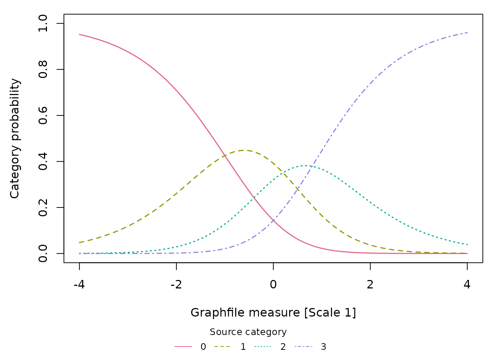

Migrating from FACETS to mfrmr
Source:vignettes/mfrmr-facets-migration.Rmd
mfrmr-facets-migration.RmdThis vignette walks FACETS users through the closest
mfrmr workflow: preparing data, fitting an
RSM/PCM many-facet Rasch-family model with
FACETS-oriented settings, generating related diagnostic and reporting
tables, and reviewing the output-contract boundary between the two
systems. GPCM can be fit in mfrmr, but its
slope-aware score semantics are intentionally outside the score-side
FACETS output-contract route.
The local numerical comparison uses FACETS 64-bit 4.5.0. The online update history lists 4.5.3 (October 2026); a current web manual is not a version-pinned executable specification. The 4.5.1 history says the gtheory interface was replaced while the linked help still names gtheory. Keep the executable, manual edition and statistical decomposition distinct. The bounded executed comparisons below do not certify all FACETS options or versions.
Mental model
The two stacks share the same psychometric framework but differ in operating model.
Before treating a legacy workflow as covered, inspect the public coverage boundary:
facets_feature_coverage()
facets_feature_coverage("not_implemented")This matrix describes the availability of package-native output
surfaces. implemented does not by itself mean that the two
programs use the same estimand, conditioning, extreme-score rule,
degrees of freedom, or numerical contract.
| Concept | FACETS (Linacre 2026) | mfrmr |
|---|---|---|
| Input | Specification file plus data file |
data.frame in long format |
| Estimation | JMLE by default |
MML by default; JML is the closest
estimation route for a JMLE-oriented comparison |
| Fit-statistic basis | Residuals at JMLE estimates | Residuals at EAP person measures under MML (shrunken
toward the mean); refit with method = "JML" for a
JMLE-style residual basis |
| Models | Multiple model statements, rating scales, partial credit, and other response families can coexist | One response-model family per fit: RSM,
PCM, or GPCM
|
| Output | Tables 0-30 plus graphic files | Returned R objects with summary() and
plot() methods |
| Anchoring | Element/group anchors, rating-scale calibration, and reusable starting values | Element and group anchors; no general threshold/scale anchors or fixed-calibration starting-value bundle |
| Repeated cells | Multiple observations may be represented within a design cell | Exact Person-by-facet duplicates are retained but force Data review; distinguish legitimate repeats with an event/occasion facet |
| Bias / interaction | Table 13 cell effects; Table 14 pairwise comparisons |
estimate_bias() and
bias_interaction_report(); conditional screens with the
differences below |
| Wright map / variable map | Graphic variable-map output |
plot(fit, type = "wright") and plot()
|
| Fair average | Table 7 fair-M average | fair_average_table() |
| Reproducibility | Specification, input data, FACETS version, and recorded run environment/settings |
build_mfrm_manifest() plus
build_mfrm_replay_script()
|
Visualize an existing FACETS analysis
read_facets_results() reads supported Scorefile exports
without refitting. The included small synthetic example has one row per
facet element, with fixed anchors and extreme scores. Inspect
summary() for available measures and fit statistics; these
counts do not assess the quality of the source analysis.
library(mfrmr)
score_directory <- system.file("extdata", "facets-example", package = "mfrmr")
facets_result <- read_facets_results(score_directory,
facet_map = c("Person", "Rater", "Task"), source_version = "4.5.0")
summary(facets_result)
#> Facet Rows Measures Infit Outfit AnchorFlagged Extreme UnknownStatus
#> 1 Person 6 6 3 3 1 3 0
#> 2 Rater 2 2 2 2 2 0 0
#> 3 Task 3 3 3 3 3 0 0
facets_result$table[, c("Facet", "ElementID", "Label", "Estimate", "SourceStatus")]
#> # A tibble: 11 × 5
#> Facet ElementID Label Estimate SourceStatus
#> <chr> <chr> <chr> <dbl> <chr>
#> 1 Person 1 1 -1.80 extreme_low
#> 2 Person 2 2 -3.10 extreme_low
#> 3 Person 3 3 5.49 extreme_high
#> 4 Person 4 4 -0.0623 estimated
#> 5 Person 5 5 -1 anchored
#> 6 Person 6 6 1.30 estimated
#> 7 Rater 1 1 -0.4 anchored
#> 8 Rater 2 2 0.4 anchored
#> 9 Task 1 1 -0.8 anchored
#> 10 Task 2 2 0 anchored
#> 11 Task 3 3 0.8 anchored
plot(facets_result, type = "measure", facets = "Person")Squares identify FACETS Status=1, which can denote a
direct anchor or a member of a group anchor. The import retains
SourceStatus = "anchored", but this does
not establish that the individual’s measure was fixed.
A group member may be estimated around the constrained mean.
GroupRaw can also be a reporting group; its value, the
number of imported group members and a reported SE cannot identify the
anchor subtype. Inspect the original Labels= for the anchor
mode and Table
7 for row annotations. A Table 7 G annotation alone need not
distinguish the G and X input modes. summary() therefore
calls this count AnchorFlagged, replacing
Anchored from earlier candidate versions. For saved
imports, call plot() again to refresh the legend and notes;
the source values and availability remain intact.
Extreme members of G/X groups can carry Status -2/-3 instead of 1, so
AnchorFlagged is not a count of every member of an anchored
group. Their triangles identify the source’s extreme-score status. A
finite reported location does not establish which adjustment produced
it: G and X can report different locations. The import preserves these
locations and marginal SEs, while keeping their Infit/Outfit
placeholders unavailable for fit plots.
type = "fit" shows measure versus Infit or Outfit;
type = "infit_outfit" compares the two mean squares.
Inspect the plotted rows and unavailable reasons before interpreting
missing points:
fit_points <- plot_data(facets_result, component = "plot_data",
type = "infit_outfit", facets = "Person")
fit_points[, c("Label", "Infit", "Outfit", "Available", "Reason")]
#> Label Infit Outfit Available
#> 1 1 1.00 1.00 FALSE
#> 2 2 1.00 1.00 FALSE
#> 3 3 1.00 1.00 FALSE
#> 4 4 0.90 0.97 TRUE
#> 5 5 0.90 0.89 TRUE
#> 6 6 1.76 2.11 TRUE
#> Reason
#> 1 Infit:source_fit_not_interpretable; Outfit:source_fit_not_interpretable
#> 2 Infit:source_fit_not_interpretable; Outfit:source_fit_not_interpretable
#> 3 Infit:source_fit_not_interpretable; Outfit:source_fit_not_interpretable
#> 4 available
#> 5 available
#> 6 available
plot_data(facets_result, component = "notes")
#> Type
#> 1 source
#> 2 scale
#> 3 uncertainty
#> 4 availability
#> 5 anchor_status
#> Text
#> 1 Reported FACETS results; no model was fitted or validated by this import.
#> 2 Source units, origins and signs are preserved; larger values do not automatically mean better performance.
#> 3 Points only. Source marginal SEs do not supply joint covariance or calibration-inclusive intervals.
#> 4 Unavailable and extreme rows remain in the table. Extreme fit values can be placeholders; unknown status is not evidence of adequacy.
#> 5 Status 1 (SourceStatus = anchored) flags direct or group anchoring; the individual measure need not be fixed. GroupRaw, imported group size and reported SE do not identify the anchor subtype. Extreme group members can instead carry Status -2/-3; AnchorFlagged does not count every member of an anchored group. Their reported locations do not identify an extreme-score adjustment rule. Check the original Labels= specification for the anchor mode and Table 7 for row annotations; G alone need not distinguish G/X input.For your own analysis, supply named comma/tab/semicolon files, a
vector of per-facet exports, or a directory of score.N.txt
files. Use the actual source encoding (for example
encoding = "CP932" for an applicable Japanese Windows
export). For FACETS text output, the following specifications retain the
column headings and quoted labels needed by the reader:
Scorefile = score.txt
Heading lines = Yes
QM = Double
CSV = SemicolonsCSV = Commas or CSV = Tabs selects the
other supported separators. Keep the generated facet heading line; the
Scorefile reader finds the column header. Check that the files exist and
that their labels are intact before importing. A successful process exit
alone does not establish a successful export. The reader’s
encoding converts an existing file; it neither changes
FACETS input settings nor restores labels already lost in the external
output.
You can keep FACETS’ exported IDs and assign local display names in
R. The map uses the imported Facet and
ElementID, not row positions or source labels. Store IDs as
text to retain any leading zeros. Here only two Persons are renamed;
other elements retain their original labels:
display_names <- data.frame(Facet = "Person", ElementID = c("1", "2"),
DisplayLabel = c("受検者 甲", "受検者 乙"))
labelled <- plot(facets_result, facets = "Person",
label_map = display_names, draw = FALSE)
labelled$data$plot_data[, c("ElementID", "Label", "DisplayLabel")]
#> ElementID Label DisplayLabel
#> 1 1 1 受検者 甲
#> 2 2 2 受検者 乙
#> 3 3 3 3
#> 4 4 4 4
#> 5 5 5 5
#> 6 6 6 6The original result and its labels remain unchanged;
labelled$data$label_map retains the supplied
correspondence. Unknown or repeated keys are errors. Repeated display
names are distinguished by element key. Only measure plots draw element
labels; other element plots keep the names in their returned data. This
map does not apply to Graphfile category labels.
Japanese text also needs a graphics device and font with the required glyphs. With Cairo support and Meiryo installed on Windows, save the plot as follows; choose an available Japanese font on another system. Check the saved file for missing glyphs. This does not require Japanese input to FACETS or change its results. See R’s Cairo device documentation.
png("facets-japanese.png", width = 7, height = 5, units = "in", res = 200,
type = "cairo", family = "Meiryo")
plot(facets_result, facets = "Person", label_map = display_names)
dev.off()
cairo_pdf("facets-japanese.pdf", width = 7, height = 5, family = "Meiryo")
plot(facets_result, facets = "Person", label_map = display_names)
dev.off()Fixed-width imports require the supported ASCII all-field layout.
Element IDs distinguish duplicate labels. Source signs and reported
values are preserved; no automatic recentering or sign reversal takes
place. A point-only Wright map (type = "wright")
additionally requires common_scale = TRUE at import after
checking compatible units and origins in the original FACETS
specification.
Extreme-score rows are flagged; their status does not identify the
adjustment rule used by FACETS. Their fit values can be placeholders and
are unavailable in fit plots. Source SEs are retained in the table; no
confidence intervals are constructed. These descriptive results do not
provide new-person scoring, threshold reconstruction or validation of
the FACETS analysis. saveRDS(facets_result, ...) preserves
the complete result; as.data.frame(facets_result) exports
its element table. See ?read_facets_results and
?plot.mfrm_facets_results for the supported scope.
For category-probability and expected-score curves, export a FACETS Graphfile with headings. This separate synthetic PCM example contains one coordinate row per scale and reported measure; it is a different analysis from the binary score example above.
graph_path <- system.file("extdata", "facets-graph-example", "graph.txt",
package = "mfrmr")
facets_curves <- read_facets_results(graph_file = graph_path,
source_version = "4.5.0")
summary(facets_curves, component = "curves")
#> Scale GridRows Categories ExpectedAvailable ProbabilityAvailable
#> 1 1 1001 4 1001 4004
#> 2 2 1001 4 1001 4004
#> 3 3 1001 4 1001 4004
#> 4 4 1001 4 1001 4004
#> ProbabilityCheckIssues
#> 1 0
#> 2 0
#> 3 0
#> 4 0
plot(facets_curves, type = "ccc", scales = 1)
Use type = "expected" for the exported expected-score
curve. Inspect the actual coordinates and source-consistency checks
with:
expected_points <- plot_data(facets_curves, "plot_data",
type = "expected", scales = 1)
head(expected_points[, c("Scale", "Measure", "Value", "Available", "Reason")])
#> Scale Measure Value Available Reason
#> 1 1 -4.000 0.0488 TRUE available
#> 2 1 -3.992 0.0492 TRUE available
#> 3 1 -3.984 0.0496 TRUE available
#> 4 1 -3.976 0.0500 TRUE available
#> 5 1 -3.968 0.0504 TRUE available
#> 6 1 -3.960 0.0508 TRUE available
head(facets_curves$graph$diagnostics)
#> SourceID SourceRow Scale Measure ProbabilitySum RoundingAllowance
#> 1 1 2 1 -4.000 1.0000 2e-04
#> 2 1 3 1 -3.992 1.0000 2e-04
#> 3 1 4 1 -3.984 0.9999 2e-04
#> 4 1 5 1 -3.976 1.0000 2e-04
#> 5 1 6 1 -3.968 1.0001 2e-04
#> 6 1 7 1 -3.960 1.0000 2e-04
#> ProbabilityStatus
#> 1 within_rounding_allowance
#> 2 within_rounding_allowance
#> 3 within_rounding_allowance
#> 4 within_rounding_allowance
#> 5 within_rounding_allowance
#> 6 within_rounding_allowanceThe reader preserves Graphfile scale numbers and category codes. A
scale number identifies a Table 8 subtable; it does not automatically
identify an item. Even binary exports may use category codes 1/2 instead
of the original 0/1 responses. Check the source specification before
interpreting expected scores. The graph Measure axis is separate from
the element measure declarations; importing both files does not align
them. When both exports belong to your analysis, supply
file = ... and graph_file = ... in one call,
after checking that correspondence.
Missing or invalid coordinates remain in
as.data.frame(facets_curves, component = "curves") and
break the plotted lines. Probability sums are checked using exported
decimal precision, without renormalizing. These checks do not certify
model fit; connecting segments do not calculate new model
predictions.
Why results and decisions can differ
Match the statistical question before comparing numbers. A FACETS-style table name does not guarantee the same calculation. For an existing FACETS study, first align the response model, retained categories, orientation, anchors and centering, observations and replication weights, and extreme-score treatment. Compare unrounded logits before user scaling. Then compare response probabilities, mean squares, df and standardization separately. FACETS uses score-residual and measure-change convergence criteria; an optimizer’s success code alone does not establish agreement with them.
The corrected candidate has a bounded executed comparison against FACETS 4.5.0: complete binary ordinary JML data with unit weights and matched signs. Locations, SEs, MnSq, PTMEA and WHEXACT YES/NO agree within external report precision; bias estimates, baseline expected scores and the zero-bias summary also agree. This is not a drop-in equivalence claim for other models or options.
| Quantity | Current definition | Consequence for interpretation |
|---|---|---|
| Fit ZSTD | Diagnostics default to FACETS fourth-moment df.
whexact = FALSE is YES and TRUE is NO; both
use the cube root. |
Use fit_df_method = "engine" and
whexact = "legacy_linear" to reproduce the former
engine/TRUE convention. "both" exposes df sensitivity.
Cutoff decisions may change. |
| Point-measure correlation | PTMEA now uses the oriented measure sum for each response, including Person rows. | Old Person-only correlations must be recomputed. |
| Displacement | Updates now include facet orientation and the score derivative. | Negative-facet released estimates now move in the correct coordinate; this is still a conditional one-step diagnostic. |
| Facet chi-square | The statistic and df use the same finite estimates and positive finite SEs. | Excluded levels are reported; a missing SE cannot silently contribute df. |
| Expected point-measure correlation | Ordinary additive RSM/PCM JML exposes PTMEAExpected and
PTMEAExpectedAsymptotic. The former includes Linacre’s
published (N-2)/N variance correction with frequency count
N. |
Matched PCM output agrees within print precision. This is a conditional reporting approximation; below count two or with unbounded/incomplete calibration, the corrected reference remains unavailable. Recreate diagnostics to obtain it. |
| PCM fair averages | Expectations under administered scales are averaged using response weights. | Averaging thresholds first can give different scores and is no longer used. |
| Bias cell tail area | Continuous weighted count minus 1 is retained;
DFDisplay separately rounds positive df for display
comparison. FACETS 4.5.0 reports count 8 and df 7 in the executed
example, although Table 13 says count minus 2. |
Checked fractional-count native tails match an integer-df finite sum extended outside its valid domain and can change a 0.05 screen. mfrmr retains the continuous Student reference and records probability availability; nonpositive df withhold the tail. These are conditional screens, not calibrated fairness tests. |
| Bias expected score |
Expctd Score and Obs-Exp Average now refer
to the main analysis. |
Separate after-bias columns show how much of that departure the shift explains. |
| Bias summary chi-square | Tests the cells against zero with df equal to the cell count. | A common nonzero bias no longer disappears through centering. |
| Pairwise bias | Uses target + bias/TargetSign, conditional cell SEs and
modified Rasch-Welch df rounded down, matching FACETS 4.5.0
unequal-count results. |
df_method = "classical" retains the earlier continuous
Welch reference. Missing references withhold comparisons; neither mode
includes calibration uncertainty. |
| Unexpected responses | Defaults to abs(z) >= 3,
rule = "residual". |
The older probability OR rule is opt-in; rankings now treat tied modes symmetrically. |
Definitions are given in the official WHEXACT, point-measure, Table 7, fair-average, and Table 13 documentation. The count-minus-1 observation above describes the executed version and example, not a correction to the external manual or a claim about every FACETS version.
Recompute diagnose_mfrm() from a saved fit, then
recreate estimate_bias() and reports. Corrected native
diagnostics and bias results carry calculation_version = 2;
do not add that field manually to old values. These diagnostic changes
do not require refitting the calibration.
For a negatively oriented rater, the model predictor contains
-severity + bias, so its context-specific severity is
severity - bias. The Table 14
examples make this direction explicit. Reversing the contrast leaves
a two-sided tail area unchanged but reverses the substantive feedback.
Pairwise df also needs its own version specification: the current t-statistics
manual describes a 2025 modification alongside classical Welch. The
executed FACETS 4.5.0 unequal-count comparison confirms the modified
formula and integer truncation for the tail area.
DFUnrounded and DFMethod retain that choice;
df_method = "classical" reproduces the earlier
reference.
Corrected pairwise tables carry CalculationVersion = 3.
Recreate build_fixed_reports() and
bias_pairwise_report() from the current bias bundle. First
recreate old bias bundles from the saved fit and current diagnostics; no
main calibration refit is needed. Historical report values are not
automatically corrected by reloading them. Local and contrast SEs
describe conditional cell uncertainty; calibration uncertainty and
cross-cell covariance are not propagated. The earlier claim that these
contrasts were generally conservative was incorrect. Check
ScreenUnavailable in the pairwise summary before reading
Flagged; the summary covers the full family even when
top_n limits the table.
The Table 4
rule and its default
threshold now match the native residual-only default. To retain the
exploratory probability screen, request
abs_z_min = 2, prob_max = .30, rule = "either". A fixed .30
cutoff has no universal interpretation: five equally likely categories
each have probability .2, so it flags every response. For tied modes,
MostLikely is missing, MostLikelyCount records
the tie and CategoryGap uses the nearest mode. This ranking
cannot decide which rater is unfair or which ratings to remove.
Category reports now distinguish the observed generating-measure
average (AvgMeasure), model-expected generating-measure
average (ExpectedMeasure), Person-only mean and expected
response score. Category residual MnSq is descriptive: conditioning on
the observed category removes the universal unit baseline, so category
ZSTD and its flags are unavailable. This does not turn a missing fit
flag into evidence that the category functions well.
In category_structure_report(),
MedianThreshold now means a cumulative 50% boundary;
AndrichThreshold retains the adjacent-category step.
Recreate saved structure reports. Half-score crossings outside
theta_range stay missing, and modal peaks describe only the
requested grid. The random chi-square likewise cannot establish
normality: with equal SEs and positive adjusted variance it is fixed by
the number of eligible elements, regardless of shape. Chi-square
summaries retain unavailable flags and use the full family before
truncation.
For external files, fixed-field import requires validated all-field
headings and element number after the statistics; other layouts should
use named delimited columns. Native score exports contain observations,
not the elements in a FACETS Scorefile. Native Tables 5 and 11 omit
parts of FACETS’ response moments and variance reports. A single
co-observation graph component also does not prove identification;
inspect the fitted design audit. The historical
conditional_probability plotting alias is ordinary P(k),
not FACETS’ adjacent-conditional probability; use ccc to
name the native quantity clearly.
Match denominators as well as cutoffs. FACETS
Totalscore defaults to No, while
fair_average_table() defaults to
totalscore = TRUE. Native raw
TotalScore/TotalCount and weighted
WeightdScore/WeightdCount are distinct;
ObservedAverage uses the weighted values. Scores 0 and 2
with weights 1 and 3 have raw total/count 2/2 but weighted total/count
6/4 and average 1.5. Keeping both counts is useful for describing the
data, provided the comparison uses the same replication
semantics and extreme-row inclusion. Weights do not by themselves
establish the independence or sampling uncertainty of repeated
ratings.
When a native definition has a useful purpose
-
JML extremes: an all-low/all-high free Person has
an unbounded ordinary JML estimate. Keeping this status separate from a
finite adjusted display avoids an optimizer-dependent ranking. FACETS
also recognizes the boundary and supplies an explicitly adjusted finite
value through Xtreme.
The default
xtreme_method = "display"retains mfrmr’s average-score target and leaves fair scores unchanged. For ordinary additive RSM/PCM JML,fair_average_table(..., xtreme = .3, xtreme_method = "facets")instead solves a corrected weighted-total equation using actual administered calibration and the element’s minimum positive eligible weight. It updates that element’s fair scores and reports conditional information SEs while retaining primary estimates and fixed anchors.estimate_bias(..., xtreme = .5)separately extrapolates extreme cells within the specified search limits. Group-mean anchors and fitted interactions are unsupported. Matching origin constraints resolves the checked interior partial-anchor differences; broader extreme-score anchoring and exclusion remain unverified. Neither its reporting SE nor an optimizer’s finite stopping value supplies uncertainty for the original infinite MLE or a validated decision probability. -
FairM references: non-Person FairM values use the
mean of finite Person estimates, excluding infinite JML estimates.
FairMReferencePersonsandFairMExcludedPersonsidentify the reference, and no eligible Persons leaves the score unavailable. The reference describes this finite subset; it is not an estimate of the mean ability of an unrestricted population. - MML and posterior scoring: integration over a specified population can stabilize sparse Person scores and makes posterior uncertainty available. It also introduces distributional assumptions and shrinkage. A score near a pass/fail cut can move for that reason. It is not automatically preferable to JML for every population, assignment design or individual decision. Posterior cut probabilities condition on the stated calibration and scoring prior; they are not probabilities of passing a future administration.
- Missing categories and unidentified comparisons: preserving the declared score ladder and refusing an unsupported contrast avoids silently changing the question. FACETS permits different category/identification conventions; see Table 8.1 and subset connectedness. A supported within-subset comparison can remain meaningful when a comparison across subsets is unidentified. Missing output must identify its affected target rather than imply that every descriptive result is unusable.
-
Uncertainty: posterior SD, conditional information
SE, structural covariance and fit-enlarged SE answer different
questions. The implemented
RealSE = ModelSE * sqrt(max(Infit, 1))agrees with the FACETS enlargement formula, but this does not make their underlying ModelSE equal or make RealSE a general dependence-robust SE. A supplied fixed anchor is not a newly estimated parameter; missing sampling SE does not establish that the external anchor is known without error.
Decisions near a cutoff
Record the estimand, method, scale, reference population, eligibility, statistic and exact comparison rule with a decision. Read both the magnitude of the departure and its uncertainty. A fit flag or a bias-screening tail area alone does not identify an unfair rater or justify deleting ratings.
Use unrounded values for an available calculation. A FACETS token
such as 2.00 at a ZSTD cutoff cannot reveal whether the
unreported value was below or above 2; retain a boundary-indeterminate
comparison. Do not choose between YES/NO, df conventions, priors or
category recoding after seeing which one crosses a desired cutoff. A
change of convention that changes a decision requires a stated rationale
and sensitivity report, even if both calculations are internally valid.
Missing uncertainty is not evidence that a criterion has been met.
For pass/fail work, keep the operational cut rule separate from a
model’s expected score or fair average.
classification_table() describes its supplied calibrated
rating plan and cut rules; posterior scoring answers a different
conditional question. Neither automatically validates the cuts, future
rating plan or substantive consequences.
Ordinary JML, corrected JML and FACETS
FACETS’ estimation
documentation states that it does not correct JMLE estimation bias.
Accordingly, ordinary method = "JML" under matched RSM/PCM
models, anchors and origin constraints is the relevant mfrmr comparison.
Equal fitted values establish neither unbiased estimation nor calibrated
intervals. More Persons alone need not remove the incidental-parameter
bias when each Person still supplies few ratings.
These operations have different targets and should be recorded separately:
| Operation | What it changes | Relationship to mfrmr |
|---|---|---|
| FACETS ordinary JMLE | Solves the joint estimation equations. | Compare with ordinary RSM/PCM JML under aligned model and numerical controls. |
FACETS Xtreme
|
Supplies finite extrapolations for extreme totals. |
xtreme_method = "facets" implements the documented
reporting convention within its supported scope; it is not a general
estimation-bias correction. |
mfrmr jml_correction_order
|
Changes the profiled structural score equation. | An experimental GPCM method requiring the same facet to own steps and slopes; it does not reproduce FACETS JMLE. |
For the corrected route,
fit_mfrm(model = "GPCM", method = "JML", jml_correction_order = ...)
solves the adjusted equation described in ?fit_mfrm. This
is an existing implementation, not an RSM/PCM correction switch. It
currently excludes anchors and supplies local-root RootSE,
not validated structural-truth confidence intervals. Its
fixed/random-roster covariance describes repeated independent Person
cohorts; the common-plan delta procedure instead holds each Person’s
ability fixed across repeated responses. Passing that RootSE into the
common-plan interval calculation would change both the estimator and the
sampling target. Corrected JML is therefore not admitted by
confint.mfrm_fair_average().
The benefit of retaining both estimators is that external
compatibility and a possible reduction in incidental-parameter bias can
be studied separately. The cost is a distinct mathematical, numerical
and inference contract: correction order, remaining bias, variance and
solver stability all require evaluation. FACETS agreement cannot select
the correction order or qualify its uncertainty. Keep ordinary JML as
the comparison/default route and select corrected JML explicitly within
its documented scope. FACETS’ separate Bias interaction
analysis also should not be confused with correction of an estimator’s
bias.
Using TAM JML as a third comparison
TAM’s tam.jml() helps check the common RSM/PCM
likelihood, but its default corrections differ from ordinary mfrmr JML.
Match category support, cumulative difficulties, anchors and location
constraints first. The TAM
documentation describes its separate adjustment and bias
arguments.
| Comparison | What to align or retain |
|---|---|
| Ordinary interior JML | Use bias = FALSE and adj = 0 for the TAM
comparison. This requires finite interior solutions; it is not a recipe
for extreme totals. |
| Category support | If a Rater-Task column lacks the highest allowed category, inspect
returned A and B. With custom full-category
A, supply intended category scores in B; a
generated score matrix can define a different model. |
| Classical correction | The checked TAM bias = TRUE multiplies free item
coefficients by (I-1)/I, using response-column count. Its
returned Person estimates and SEs are not all recomputed at the
corrected coefficients. This is distinct from mfrmr’s profile-score
adjustment selected by jml_correction_order. |
| Extreme totals | TAM adj modifies calibration scores. mfrmr’s explicit
xtreme_method = "facets" conditions on saved calibration
and retains infinite primary estimates. Matched extrapolations do not
establish matched calibration procedures. |
| Person uncertainty | Compare TAM theta with MLEs and retain WLE
separately. errorWLE is not the MLE’s SE. Conditional
information, joint sampling uncertainty and coverage are separate
questions. |
| Fit statistics |
tam.jml.fit(trim_val = Inf) exposes untrimmed residual
fit; its default trims large squared residuals. Unit-weight untrimmed
fit has a matched fourth-moment transform, without certifying every
FACETS reporting field. |
| Weights | TAM normalizes Person pweights; these are not arbitrary
response replication weights. With missingness and unequal weights, its
checked item Outfit denominator also differs from normalization by
observed weight sum. |
| Anchors | Match the origin constraints as well as fixed values. FACETS ignores
centering on anchored facets; ordinary mfrmr JML offers
centering_scope = "anchor_origin" for direct and group
anchors. This does not extend the executed TAM group-anchor comparison
scope. The checked TAM version routes Person anchors through version 1;
an all-item-fixed case with a Person anchor fails. |
Executed TAM 4.3-25 comparisons support close ordinary-JML agreement
for matched complete/sparse RSM/PCM designs and supported partial Person
anchors. They do not establish general coverage, every FACETS anchoring
convention, or a new JML import route: import_tam_fit()
remains MML-only. Retain unavailable uncertainty instead of substituting
WLE SEs or conditional information for it.
Inspect returned anchors too. In the checked TAM 4.3-25 version-1
path, theta.fixed with xsi.fixed = NULL still
recenters every Person after an update, moving a supplied Person anchor.
A free-intercept probe did not retain the anchor and reached its
iteration limit. An empty fixed-item matrix prevented that recentering
in this version, but the probe still did not reach the required
score-equation accuracy within the same limit. This is a
version-specific diagnostic observation, not a general workaround
recommendation. The matching reference instead uses an independently
fitted unanchored TAM solution translated to the specified Person
origin, preserving every response probability. Keep that algebraic
comparison separate from a successful direct anchored TAM execution.
A one-shot legacy-compatible call
If the goal is to translate a FACETS-style script with minimal R-side
plumbing, use run_mfrm_facets() (alias
mfrmRFacets()):
library(mfrmr)
data("mfrmr_example_operational", package = "mfrmr")
run <- run_mfrm_facets(
data = mfrmr_example_operational,
person = "Person",
facets = c("Rater", "Criterion"),
score = "Score",
model = "RSM",
method = "JML"
)
names(run)
#> [1] "fit" "diagnostics" "iteration" "fair_average" "rating_scale"
#> [6] "run_info" "mapping"The wrapper returns the same fit_mfrm() and
diagnose_mfrm() objects that a step-by-step pipeline
produces, plus the iteration log, fair-average table, and rating-scale
table:
jml_status <- summary(run$fit, profile = "fit", detail = "brief")
jml_status$overview[, c(
"Model", "Method", "Converged", "InferenceReady",
"ConvergenceSeverity"
)]
#> # A tibble: 1 × 5
#> Model Method Converged InferenceReady ConvergenceSeverity
#> <chr> <chr> <lgl> <lgl> <chr>
#> 1 RSM JML TRUE TRUE pass
jml_status$readiness
#> Domain Status
#> 1 Fit ready
#> 2 Numerical pass
#> 3 Data pass
#> 4 Design pass_linked
#> 5 Stability pass
#> 6 Diagnostics not_assessed
#> 7 Reporting exploratory_fit_ready_for_diagnostics
#> Detail
#> 1 All stored fit-readiness components passed.
#> 2 Optimizer returned convergence code 0.
#> 3 No preparation warning or review row was retained.
#> 4 The observed graph satisfies the connectivity requirement; review the remaining design and identification assumptions separately.
#> 5 No boundary-constant non-person facet level was detected.
#> 6 Diagnostics have not yet been incorporated into this fit-only status.
#> 7 Reporting status is the strictest applicable upstream workflow state.
head(run$fair_average)
#> $raw_by_facet
#> $raw_by_facet$Person
#> # A tibble: 48 × 32
#> TotalScore TotalCount WeightdScore WeightdCount ObservedAverage FairM FairZ
#> <int> <int> <dbl> <dbl> <dbl> <dbl> <dbl>
#> 1 22 6 22 6 3.67 3.69 3.69
#> 2 22 6 22 6 3.67 3.66 3.66
#> 3 20 6 20 6 3.33 3.44 3.44
#> 4 20 6 20 6 3.33 3.41 3.41
#> 5 19 6 19 6 3.17 3.34 3.34
#> 6 19 6 19 6 3.17 3.19 3.19
#> 7 18 6 18 6 3 3.19 3.19
#> 8 17 5 17 5 3.4 3.11 3.11
#> 9 20 6 20 6 3.33 3.07 3.07
#> 10 18 6 18 6 3 3.02 3.02
#> # ℹ 38 more rows
#> # ℹ 25 more variables: FairMReference <chr>, FairMReferencePersons <int>,
#> # FairMExcludedPersons <int>, FairScoreBasis <chr>, Measure <dbl>,
#> # PrimaryMeasure <dbl>, MeasureBasis <chr>, ExtremeAdjustment <dbl>,
#> # MeasureSEBasis <chr>, ModelSE <dbl>, RealSE <dbl>, InfitMnSq <dbl>,
#> # InfitZStd <dbl>, OutfitMnSq <dbl>, OutfitZStd <dbl>, PtMeaCorr <dbl>,
#> # PTMEAExpected <dbl>, PTMEAExpectedAsymptotic <dbl>, PTMEAExpectedN <dbl>, …
#>
#> $raw_by_facet$Rater
#> # A tibble: 6 × 32
#> TotalScore TotalCount WeightdScore WeightdCount ObservedAverage FairM FairZ
#> <int> <int> <dbl> <dbl> <dbl> <dbl> <dbl>
#> 1 115 50 115 50 2.3 2.09 2.23
#> 2 77 38 77 38 2.03 2.10 2.24
#> 3 108 47 108 47 2.30 2.17 2.31
#> 4 95 44 95 44 2.16 2.29 2.44
#> 5 147 56 147 56 2.62 2.54 2.70
#> 6 130 47 130 47 2.77 2.73 2.88
#> # ℹ 25 more variables: FairMReference <chr>, FairMReferencePersons <int>,
#> # FairMExcludedPersons <int>, FairScoreBasis <chr>, Measure <dbl>,
#> # PrimaryMeasure <dbl>, MeasureBasis <chr>, ExtremeAdjustment <dbl>,
#> # MeasureSEBasis <chr>, ModelSE <dbl>, RealSE <dbl>, InfitMnSq <dbl>,
#> # InfitZStd <dbl>, OutfitMnSq <dbl>, OutfitZStd <dbl>, PtMeaCorr <dbl>,
#> # PTMEAExpected <dbl>, PTMEAExpectedAsymptotic <dbl>, PTMEAExpectedN <dbl>,
#> # PTMEAExpectedFactor <dbl>, PTMEAExpectedStatus <chr>, …
#>
#> $raw_by_facet$Criterion
#> # A tibble: 3 × 32
#> TotalScore TotalCount WeightdScore WeightdCount ObservedAverage FairM FairZ
#> <int> <int> <dbl> <dbl> <dbl> <dbl> <dbl>
#> 1 211 94 211 94 2.24 2.16 2.30
#> 2 218 94 218 94 2.32 2.23 2.37
#> 3 243 94 243 94 2.59 2.57 2.73
#> # ℹ 25 more variables: FairMReference <chr>, FairMReferencePersons <int>,
#> # FairMExcludedPersons <int>, FairScoreBasis <chr>, Measure <dbl>,
#> # PrimaryMeasure <dbl>, MeasureBasis <chr>, ExtremeAdjustment <dbl>,
#> # MeasureSEBasis <chr>, ModelSE <dbl>, RealSE <dbl>, InfitMnSq <dbl>,
#> # InfitZStd <dbl>, OutfitMnSq <dbl>, OutfitZStd <dbl>, PtMeaCorr <dbl>,
#> # PTMEAExpected <dbl>, PTMEAExpectedAsymptotic <dbl>, PTMEAExpectedN <dbl>,
#> # PTMEAExpectedFactor <dbl>, PTMEAExpectedStatus <chr>, …
#>
#>
#> $by_facet
#> $by_facet$Person
#> Total Score Total Count Weightd Score Weightd Count Obsvd Average
#> 1 22 6 22 6 3.67
#> 2 22 6 22 6 3.67
#> 3 20 6 20 6 3.33
#> 4 20 6 20 6 3.33
#> 5 19 6 19 6 3.17
#> 6 19 6 19 6 3.17
#> 7 18 6 18 6 3.00
#> 8 17 5 17 5 3.40
#> 9 20 6 20 6 3.33
#> 10 18 6 18 6 3.00
#> 11 17 6 17 6 2.83
#> 12 16 6 16 6 2.67
#> 13 15 5 15 5 3.00
#> 14 16 6 16 6 2.67
#> 15 16 6 16 6 2.67
#> 16 18 6 18 6 3.00
#> 17 12 5 12 5 2.40
#> 18 15 6 15 6 2.50
#> 19 16 6 16 6 2.67
#> 20 14 6 14 6 2.33
#> 21 17 6 17 6 2.83
#> 22 13 6 13 6 2.17
#> 23 13 6 13 6 2.17
#> 24 16 6 16 6 2.67
#> 25 16 6 16 6 2.67
#> 26 12 5 12 5 2.40
#> 27 11 5 11 5 2.20
#> 28 15 6 15 6 2.50
#> 29 13 6 13 6 2.17
#> 30 13 6 13 6 2.17
#> 31 12 6 12 6 2.00
#> 32 10 5 10 5 2.00
#> 33 13 6 13 6 2.17
#> 34 13 6 13 6 2.17
#> 35 14 6 14 6 2.33
#> 36 12 6 12 6 2.00
#> 37 12 6 12 6 2.00
#> 38 12 6 12 6 2.00
#> 39 9 6 9 6 1.50
#> 40 10 6 10 6 1.67
#> 41 9 6 9 6 1.50
#> 42 9 6 9 6 1.50
#> 43 9 6 9 6 1.50
#> 44 8 6 8 6 1.33
#> 45 8 6 8 6 1.33
#> 46 8 6 8 6 1.33
#> 47 8 6 8 6 1.33
#> 48 7 6 7 6 1.17
#> Fair(M) Average Fair(Z) Average FairMReference
#> 1 3.69 3.69 Mean of other facet measures
#> 2 3.66 3.66 Mean of other facet measures
#> 3 3.44 3.44 Mean of other facet measures
#> 4 3.41 3.41 Mean of other facet measures
#> 5 3.34 3.34 Mean of other facet measures
#> 6 3.19 3.19 Mean of other facet measures
#> 7 3.19 3.19 Mean of other facet measures
#> 8 3.11 3.11 Mean of other facet measures
#> 9 3.07 3.07 Mean of other facet measures
#> 10 3.02 3.02 Mean of other facet measures
#> 11 2.92 2.92 Mean of other facet measures
#> 12 2.86 2.86 Mean of other facet measures
#> 13 2.76 2.76 Mean of other facet measures
#> 14 2.75 2.75 Mean of other facet measures
#> 15 2.75 2.75 Mean of other facet measures
#> 16 2.69 2.69 Mean of other facet measures
#> 17 2.66 2.66 Mean of other facet measures
#> 18 2.62 2.62 Mean of other facet measures
#> 19 2.58 2.58 Mean of other facet measures
#> 20 2.52 2.52 Mean of other facet measures
#> 21 2.51 2.51 Mean of other facet measures
#> 22 2.35 2.35 Mean of other facet measures
#> 23 2.35 2.35 Mean of other facet measures
#> 24 2.35 2.35 Mean of other facet measures
#> 25 2.35 2.35 Mean of other facet measures
#> 26 2.33 2.33 Mean of other facet measures
#> 27 2.26 2.26 Mean of other facet measures
#> 28 2.18 2.18 Mean of other facet measures
#> 29 2.16 2.16 Mean of other facet measures
#> 30 2.16 2.16 Mean of other facet measures
#> 31 2.10 2.10 Mean of other facet measures
#> 32 2.07 2.07 Mean of other facet measures
#> 33 2.06 2.06 Mean of other facet measures
#> 34 2.06 2.06 Mean of other facet measures
#> 35 2.03 2.03 Mean of other facet measures
#> 36 1.99 1.99 Mean of other facet measures
#> 37 1.90 1.90 Mean of other facet measures
#> 38 1.74 1.74 Mean of other facet measures
#> 39 1.61 1.61 Mean of other facet measures
#> 40 1.58 1.58 Mean of other facet measures
#> 41 1.56 1.56 Mean of other facet measures
#> 42 1.48 1.48 Mean of other facet measures
#> 43 1.48 1.48 Mean of other facet measures
#> 44 1.38 1.38 Mean of other facet measures
#> 45 1.38 1.38 Mean of other facet measures
#> 46 1.36 1.36 Mean of other facet measures
#> 47 1.36 1.36 Mean of other facet measures
#> 48 1.18 1.18 Mean of other facet measures
#> FairMReferencePersons FairMExcludedPersons FairScoreBasis
#> 1 48 0 Common rating-scale expectation
#> 2 48 0 Common rating-scale expectation
#> 3 48 0 Common rating-scale expectation
#> 4 48 0 Common rating-scale expectation
#> 5 48 0 Common rating-scale expectation
#> 6 48 0 Common rating-scale expectation
#> 7 48 0 Common rating-scale expectation
#> 8 48 0 Common rating-scale expectation
#> 9 48 0 Common rating-scale expectation
#> 10 48 0 Common rating-scale expectation
#> 11 48 0 Common rating-scale expectation
#> 12 48 0 Common rating-scale expectation
#> 13 48 0 Common rating-scale expectation
#> 14 48 0 Common rating-scale expectation
#> 15 48 0 Common rating-scale expectation
#> 16 48 0 Common rating-scale expectation
#> 17 48 0 Common rating-scale expectation
#> 18 48 0 Common rating-scale expectation
#> 19 48 0 Common rating-scale expectation
#> 20 48 0 Common rating-scale expectation
#> 21 48 0 Common rating-scale expectation
#> 22 48 0 Common rating-scale expectation
#> 23 48 0 Common rating-scale expectation
#> 24 48 0 Common rating-scale expectation
#> 25 48 0 Common rating-scale expectation
#> 26 48 0 Common rating-scale expectation
#> 27 48 0 Common rating-scale expectation
#> 28 48 0 Common rating-scale expectation
#> 29 48 0 Common rating-scale expectation
#> 30 48 0 Common rating-scale expectation
#> 31 48 0 Common rating-scale expectation
#> 32 48 0 Common rating-scale expectation
#> 33 48 0 Common rating-scale expectation
#> 34 48 0 Common rating-scale expectation
#> 35 48 0 Common rating-scale expectation
#> 36 48 0 Common rating-scale expectation
#> 37 48 0 Common rating-scale expectation
#> 38 48 0 Common rating-scale expectation
#> 39 48 0 Common rating-scale expectation
#> 40 48 0 Common rating-scale expectation
#> 41 48 0 Common rating-scale expectation
#> 42 48 0 Common rating-scale expectation
#> 43 48 0 Common rating-scale expectation
#> 44 48 0 Common rating-scale expectation
#> 45 48 0 Common rating-scale expectation
#> 46 48 0 Common rating-scale expectation
#> 47 48 0 Common rating-scale expectation
#> 48 48 0 Common rating-scale expectation
#> Measure PrimaryMeasure MeasureBasis ExtremeAdjustment
#> 1 2.37 2.37 Fitted estimate 0
#> 2 2.26 2.26 Fitted estimate 0
#> 3 1.65 1.65 Fitted estimate 0
#> 4 1.59 1.59 Fitted estimate 0
#> 5 1.44 1.44 Fitted estimate 0
#> 6 1.16 1.16 Fitted estimate 0
#> 7 1.15 1.15 Fitted estimate 0
#> 8 1.01 1.01 Fitted estimate 0
#> 9 0.95 0.95 Fitted estimate 0
#> 10 0.87 0.87 Fitted estimate 0
#> 11 0.71 0.71 Fitted estimate 0
#> 12 0.62 0.62 Fitted estimate 0
#> 13 0.45 0.45 Fitted estimate 0
#> 14 0.45 0.45 Fitted estimate 0
#> 15 0.45 0.45 Fitted estimate 0
#> 16 0.35 0.35 Fitted estimate 0
#> 17 0.30 0.30 Fitted estimate 0
#> 18 0.25 0.25 Fitted estimate 0
#> 19 0.17 0.17 Fitted estimate 0
#> 20 0.09 0.09 Fitted estimate 0
#> 21 0.08 0.08 Fitted estimate 0
#> 22 -0.18 -0.18 Fitted estimate 0
#> 23 -0.18 -0.18 Fitted estimate 0
#> 24 -0.19 -0.19 Fitted estimate 0
#> 25 -0.19 -0.19 Fitted estimate 0
#> 26 -0.21 -0.21 Fitted estimate 0
#> 27 -0.33 -0.33 Fitted estimate 0
#> 28 -0.45 -0.45 Fitted estimate 0
#> 29 -0.49 -0.49 Fitted estimate 0
#> 30 -0.49 -0.49 Fitted estimate 0
#> 31 -0.59 -0.59 Fitted estimate 0
#> 32 -0.65 -0.65 Fitted estimate 0
#> 33 -0.65 -0.65 Fitted estimate 0
#> 34 -0.65 -0.65 Fitted estimate 0
#> 35 -0.71 -0.71 Fitted estimate 0
#> 36 -0.79 -0.79 Fitted estimate 0
#> 37 -0.95 -0.95 Fitted estimate 0
#> 38 -1.28 -1.28 Fitted estimate 0
#> 39 -1.56 -1.56 Fitted estimate 0
#> 40 -1.64 -1.64 Fitted estimate 0
#> 41 -1.68 -1.68 Fitted estimate 0
#> 42 -1.89 -1.89 Fitted estimate 0
#> 43 -1.89 -1.89 Fitted estimate 0
#> 44 -2.21 -2.21 Fitted estimate 0
#> 45 -2.21 -2.21 Fitted estimate 0
#> 46 -2.26 -2.26 Fitted estimate 0
#> 47 -2.26 -2.26 Fitted estimate 0
#> 48 -3.08 -3.08 Fitted estimate 0
#> MeasureSEBasis Model S.E. Real S.E. Infit MnSq Infit ZStd
#> 1 Fitted measure or unavailable 0.76 0.76 0.44 -0.75
#> 2 Fitted measure or unavailable 0.77 0.94 1.51 0.85
#> 3 Fitted measure or unavailable 0.59 0.65 1.23 0.58
#> 4 Fitted measure or unavailable 0.58 0.58 1.00 0.17
#> 5 Fitted measure or unavailable 0.55 0.60 1.22 0.57
#> 6 Fitted measure or unavailable 0.55 0.71 1.66 1.25
#> 7 Fitted measure or unavailable 0.53 0.85 2.62 2.49
#> 8 Fitted measure or unavailable 0.66 0.66 0.56 -0.67
#> 9 Fitted measure or unavailable 0.58 0.70 1.44 0.90
#> 10 Fitted measure or unavailable 0.53 0.53 0.89 -0.06
#> 11 Fitted measure or unavailable 0.51 0.51 0.72 -0.48
#> 12 Fitted measure or unavailable 0.51 0.67 1.72 1.37
#> 13 Fitted measure or unavailable 0.57 0.59 1.04 0.26
#> 14 Fitted measure or unavailable 0.51 0.51 0.69 -0.55
#> 15 Fitted measure or unavailable 0.51 0.51 0.34 -1.67
#> 16 Fitted measure or unavailable 0.53 0.56 1.13 0.41
#> 17 Fitted measure or unavailable 0.56 0.78 1.95 1.51
#> 18 Fitted measure or unavailable 0.51 0.52 1.01 0.19
#> 19 Fitted measure or unavailable 0.52 0.72 1.93 1.63
#> 20 Fitted measure or unavailable 0.52 0.52 0.14 -2.60
#> 21 Fitted measure or unavailable 0.51 0.62 1.44 0.96
#> 22 Fitted measure or unavailable 0.53 0.53 0.65 -0.58
#> 23 Fitted measure or unavailable 0.53 0.53 0.13 -2.63
#> 24 Fitted measure or unavailable 0.51 0.51 0.61 -0.76
#> 25 Fitted measure or unavailable 0.51 0.51 0.61 -0.76
#> 26 Fitted measure or unavailable 0.57 0.57 0.59 -0.69
#> 27 Fitted measure or unavailable 0.58 0.60 1.08 0.33
#> 28 Fitted measure or unavailable 0.51 0.51 0.29 -1.86
#> 29 Fitted measure or unavailable 0.54 0.82 2.35 2.04
#> 30 Fitted measure or unavailable 0.54 0.66 1.54 1.05
#> 31 Fitted measure or unavailable 0.55 0.55 0.43 -1.16
#> 32 Fitted measure or unavailable 0.60 0.63 1.07 0.32
#> 33 Fitted measure or unavailable 0.54 0.57 1.11 0.37
#> 34 Fitted measure or unavailable 0.54 0.54 0.50 -1.00
#> 35 Fitted measure or unavailable 0.52 0.53 1.04 0.26
#> 36 Fitted measure or unavailable 0.55 0.55 0.29 -1.68
#> 37 Fitted measure or unavailable 0.56 0.56 0.79 -0.24
#> 38 Fitted measure or unavailable 0.55 0.55 0.43 -1.17
#> 39 Fitted measure or unavailable 0.68 0.68 0.70 -0.38
#> 40 Fitted measure or unavailable 0.62 0.62 0.54 -0.78
#> 41 Fitted measure or unavailable 0.68 0.68 0.59 -0.62
#> 42 Fitted measure or unavailable 0.68 0.71 1.08 0.33
#> 43 Fitted measure or unavailable 0.68 1.28 3.53 2.80
#> 44 Fitted measure or unavailable 0.79 0.79 0.70 -0.28
#> 45 Fitted measure or unavailable 0.79 0.79 0.79 -0.12
#> 46 Fitted measure or unavailable 0.79 0.79 0.73 -0.21
#> 47 Fitted measure or unavailable 0.79 0.79 0.57 -0.53
#> 48 Fitted measure or unavailable 1.06 1.08 1.03 0.35
#> Outfit MnSq Outfit ZStd PtMea Corr PTMEAExpected PTMEAExpectedAsymptotic
#> 1 0.39 -0.78 0.86 0.28 0.23
#> 2 1.04 0.33 0.59 0.34 0.28
#> 3 1.31 0.70 -0.05 0.26 0.22
#> 4 0.99 0.17 0.44 0.24 0.20
#> 5 1.31 0.73 -0.81 0.26 0.21
#> 6 1.91 1.56 -0.13 0.39 0.32
#> 7 2.59 2.46 -0.51 0.27 0.22
#> 8 0.60 -0.56 -0.02 0.24 0.19
#> 9 1.53 1.02 -0.54 0.26 0.21
#> 10 0.85 -0.15 -0.34 0.40 0.34
#> 11 0.69 -0.55 0.21 0.28 0.24
#> 12 1.75 1.41 -0.50 0.28 0.23
#> 13 1.05 0.28 0.75 0.22 0.18
#> 14 0.68 -0.56 0.53 0.29 0.24
#> 15 0.34 -1.69 0.23 0.29 0.24
#> 16 1.09 0.35 0.09 0.29 0.24
#> 17 1.93 1.49 -0.56 0.23 0.18
#> 18 1.01 0.18 0.78 0.31 0.26
#> 19 1.95 1.66 0.22 0.49 0.42
#> 20 0.14 -2.62 0.96 0.28 0.23
#> 21 1.44 0.95 0.64 0.30 0.25
#> 22 0.67 -0.53 0.50 0.27 0.23
#> 23 0.12 -2.69 0.71 0.27 0.23
#> 24 0.62 -0.73 0.68 0.30 0.25
#> 25 0.62 -0.73 0.68 0.30 0.25
#> 26 0.62 -0.60 0.81 0.41 0.33
#> 27 1.13 0.40 -0.15 0.31 0.25
#> 28 0.29 -1.85 0.54 0.30 0.25
#> 29 2.57 2.27 -0.27 0.40 0.34
#> 30 1.49 0.98 0.54 0.40 0.34
#> 31 0.43 -1.19 0.58 0.29 0.24
#> 32 1.10 0.36 0.75 0.30 0.24
#> 33 1.03 0.24 -0.09 0.48 0.41
#> 34 0.53 -0.92 0.66 0.48 0.41
#> 35 1.06 0.29 -0.16 0.30 0.25
#> 36 0.31 -1.61 0.79 0.39 0.33
#> 37 0.79 -0.23 0.71 0.47 0.40
#> 38 0.42 -1.19 0.59 0.29 0.24
#> 39 0.72 -0.33 0.08 0.22 0.18
#> 40 0.58 -0.67 0.25 0.42 0.36
#> 41 0.64 -0.50 0.39 0.24 0.20
#> 42 0.91 0.06 0.82 0.33 0.27
#> 43 3.31 2.61 0.10 0.33 0.27
#> 44 0.68 -0.28 0.50 0.21 0.18
#> 45 0.88 0.05 0.15 0.21 0.18
#> 46 0.73 -0.20 0.40 0.20 0.16
#> 47 0.52 -0.62 0.93 0.20 0.16
#> 48 1.23 0.55 -0.36 0.15 0.12
#> PTMEAExpectedN PTMEAExpectedFactor PTMEAExpectedStatus
#> 1 6 0.6666667 available_conditional
#> 2 6 0.6666667 available_conditional
#> 3 6 0.6666667 available_conditional
#> 4 6 0.6666667 available_conditional
#> 5 6 0.6666667 available_conditional
#> 6 6 0.6666667 available_conditional
#> 7 6 0.6666667 available_conditional
#> 8 5 0.6000000 available_conditional
#> 9 6 0.6666667 available_conditional
#> 10 6 0.6666667 available_conditional
#> 11 6 0.6666667 available_conditional
#> 12 6 0.6666667 available_conditional
#> 13 5 0.6000000 available_conditional
#> 14 6 0.6666667 available_conditional
#> 15 6 0.6666667 available_conditional
#> 16 6 0.6666667 available_conditional
#> 17 5 0.6000000 available_conditional
#> 18 6 0.6666667 available_conditional
#> 19 6 0.6666667 available_conditional
#> 20 6 0.6666667 available_conditional
#> 21 6 0.6666667 available_conditional
#> 22 6 0.6666667 available_conditional
#> 23 6 0.6666667 available_conditional
#> 24 6 0.6666667 available_conditional
#> 25 6 0.6666667 available_conditional
#> 26 5 0.6000000 available_conditional
#> 27 5 0.6000000 available_conditional
#> 28 6 0.6666667 available_conditional
#> 29 6 0.6666667 available_conditional
#> 30 6 0.6666667 available_conditional
#> 31 6 0.6666667 available_conditional
#> 32 5 0.6000000 available_conditional
#> 33 6 0.6666667 available_conditional
#> 34 6 0.6666667 available_conditional
#> 35 6 0.6666667 available_conditional
#> 36 6 0.6666667 available_conditional
#> 37 6 0.6666667 available_conditional
#> 38 6 0.6666667 available_conditional
#> 39 6 0.6666667 available_conditional
#> 40 6 0.6666667 available_conditional
#> 41 6 0.6666667 available_conditional
#> 42 6 0.6666667 available_conditional
#> 43 6 0.6666667 available_conditional
#> 44 6 0.6666667 available_conditional
#> 45 6 0.6666667 available_conditional
#> 46 6 0.6666667 available_conditional
#> 47 6 0.6666667 available_conditional
#> 48 6 0.6666667 available_conditional
#> PTMEAExpectedReason
#> 1 Conditional finite-count reporting approximation; not an exact sample-correlation expectation or inferential test.
#> 2 Conditional finite-count reporting approximation; not an exact sample-correlation expectation or inferential test.
#> 3 Conditional finite-count reporting approximation; not an exact sample-correlation expectation or inferential test.
#> 4 Conditional finite-count reporting approximation; not an exact sample-correlation expectation or inferential test.
#> 5 Conditional finite-count reporting approximation; not an exact sample-correlation expectation or inferential test.
#> 6 Conditional finite-count reporting approximation; not an exact sample-correlation expectation or inferential test.
#> 7 Conditional finite-count reporting approximation; not an exact sample-correlation expectation or inferential test.
#> 8 Conditional finite-count reporting approximation; not an exact sample-correlation expectation or inferential test.
#> 9 Conditional finite-count reporting approximation; not an exact sample-correlation expectation or inferential test.
#> 10 Conditional finite-count reporting approximation; not an exact sample-correlation expectation or inferential test.
#> 11 Conditional finite-count reporting approximation; not an exact sample-correlation expectation or inferential test.
#> 12 Conditional finite-count reporting approximation; not an exact sample-correlation expectation or inferential test.
#> 13 Conditional finite-count reporting approximation; not an exact sample-correlation expectation or inferential test.
#> 14 Conditional finite-count reporting approximation; not an exact sample-correlation expectation or inferential test.
#> 15 Conditional finite-count reporting approximation; not an exact sample-correlation expectation or inferential test.
#> 16 Conditional finite-count reporting approximation; not an exact sample-correlation expectation or inferential test.
#> 17 Conditional finite-count reporting approximation; not an exact sample-correlation expectation or inferential test.
#> 18 Conditional finite-count reporting approximation; not an exact sample-correlation expectation or inferential test.
#> 19 Conditional finite-count reporting approximation; not an exact sample-correlation expectation or inferential test.
#> 20 Conditional finite-count reporting approximation; not an exact sample-correlation expectation or inferential test.
#> 21 Conditional finite-count reporting approximation; not an exact sample-correlation expectation or inferential test.
#> 22 Conditional finite-count reporting approximation; not an exact sample-correlation expectation or inferential test.
#> 23 Conditional finite-count reporting approximation; not an exact sample-correlation expectation or inferential test.
#> 24 Conditional finite-count reporting approximation; not an exact sample-correlation expectation or inferential test.
#> 25 Conditional finite-count reporting approximation; not an exact sample-correlation expectation or inferential test.
#> 26 Conditional finite-count reporting approximation; not an exact sample-correlation expectation or inferential test.
#> 27 Conditional finite-count reporting approximation; not an exact sample-correlation expectation or inferential test.
#> 28 Conditional finite-count reporting approximation; not an exact sample-correlation expectation or inferential test.
#> 29 Conditional finite-count reporting approximation; not an exact sample-correlation expectation or inferential test.
#> 30 Conditional finite-count reporting approximation; not an exact sample-correlation expectation or inferential test.
#> 31 Conditional finite-count reporting approximation; not an exact sample-correlation expectation or inferential test.
#> 32 Conditional finite-count reporting approximation; not an exact sample-correlation expectation or inferential test.
#> 33 Conditional finite-count reporting approximation; not an exact sample-correlation expectation or inferential test.
#> 34 Conditional finite-count reporting approximation; not an exact sample-correlation expectation or inferential test.
#> 35 Conditional finite-count reporting approximation; not an exact sample-correlation expectation or inferential test.
#> 36 Conditional finite-count reporting approximation; not an exact sample-correlation expectation or inferential test.
#> 37 Conditional finite-count reporting approximation; not an exact sample-correlation expectation or inferential test.
#> 38 Conditional finite-count reporting approximation; not an exact sample-correlation expectation or inferential test.
#> 39 Conditional finite-count reporting approximation; not an exact sample-correlation expectation or inferential test.
#> 40 Conditional finite-count reporting approximation; not an exact sample-correlation expectation or inferential test.
#> 41 Conditional finite-count reporting approximation; not an exact sample-correlation expectation or inferential test.
#> 42 Conditional finite-count reporting approximation; not an exact sample-correlation expectation or inferential test.
#> 43 Conditional finite-count reporting approximation; not an exact sample-correlation expectation or inferential test.
#> 44 Conditional finite-count reporting approximation; not an exact sample-correlation expectation or inferential test.
#> 45 Conditional finite-count reporting approximation; not an exact sample-correlation expectation or inferential test.
#> 46 Conditional finite-count reporting approximation; not an exact sample-correlation expectation or inferential test.
#> 47 Conditional finite-count reporting approximation; not an exact sample-correlation expectation or inferential test.
#> 48 Conditional finite-count reporting approximation; not an exact sample-correlation expectation or inferential test.
#> Anch Status Element ObservedAverage AdjustedAverage
#> 1 P015 3.67 3.69
#> 2 P045 3.67 3.66
#> 3 P036 3.33 3.44
#> 4 P030 3.33 3.41
#> 5 P027 3.17 3.34
#> 6 P013 3.17 3.19
#> 7 P025 3.00 3.19
#> 8 P006 3.40 3.11
#> 9 P002 3.33 3.07
#> 10 P019 3.00 3.02
#> 11 P034 2.83 2.92
#> 12 P021 2.67 2.86
#> 13 P001 3.00 2.76
#> 14 P031 2.67 2.75
#> 15 P035 2.67 2.75
#> 16 P004 3.00 2.69
#> 17 P024 2.40 2.66
#> 18 P038 2.50 2.62
#> 19 P048 2.67 2.58
#> 20 P022 2.33 2.52
#> 21 P003 2.83 2.51
#> 22 P020 2.17 2.35
#> 23 P026 2.17 2.35
#> 24 P005 2.67 2.35
#> 25 P010 2.67 2.35
#> 26 P011 2.40 2.33
#> 27 P028 2.20 2.26
#> 28 P008 2.50 2.18
#> 29 P012 2.17 2.16
#> 30 P018 2.17 2.16
#> 31 P042 2.00 2.10
#> 32 P039 2.00 2.07
#> 33 P043 2.17 2.06
#> 34 P046 2.17 2.06
#> 35 P009 2.33 2.03
#> 36 P017 2.00 1.99
#> 37 P044 2.00 1.90
#> 38 P007 2.00 1.74
#> 39 P023 1.50 1.61
#> 40 P047 1.67 1.58
#> 41 P041 1.50 1.56
#> 42 P014 1.50 1.48
#> 43 P016 1.50 1.48
#> 44 P037 1.33 1.38
#> 45 P040 1.33 1.38
#> 46 P029 1.33 1.36
#> 47 P033 1.33 1.36
#> 48 P032 1.17 1.18
#> StandardizedAdjustedAverage ModelBasedSE FitAdjustedSE
#> 1 3.69 0.76 0.76
#> 2 3.66 0.77 0.94
#> 3 3.44 0.59 0.65
#> 4 3.41 0.58 0.58
#> 5 3.34 0.55 0.60
#> 6 3.19 0.55 0.71
#> 7 3.19 0.53 0.85
#> 8 3.11 0.66 0.66
#> 9 3.07 0.58 0.70
#> 10 3.02 0.53 0.53
#> 11 2.92 0.51 0.51
#> 12 2.86 0.51 0.67
#> 13 2.76 0.57 0.59
#> 14 2.75 0.51 0.51
#> 15 2.75 0.51 0.51
#> 16 2.69 0.53 0.56
#> 17 2.66 0.56 0.78
#> 18 2.62 0.51 0.52
#> 19 2.58 0.52 0.72
#> 20 2.52 0.52 0.52
#> 21 2.51 0.51 0.62
#> 22 2.35 0.53 0.53
#> 23 2.35 0.53 0.53
#> 24 2.35 0.51 0.51
#> 25 2.35 0.51 0.51
#> 26 2.33 0.57 0.57
#> 27 2.26 0.58 0.60
#> 28 2.18 0.51 0.51
#> 29 2.16 0.54 0.82
#> 30 2.16 0.54 0.66
#> 31 2.10 0.55 0.55
#> 32 2.07 0.60 0.63
#> 33 2.06 0.54 0.57
#> 34 2.06 0.54 0.54
#> 35 2.03 0.52 0.53
#> 36 1.99 0.55 0.55
#> 37 1.90 0.56 0.56
#> 38 1.74 0.55 0.55
#> 39 1.61 0.68 0.68
#> 40 1.58 0.62 0.62
#> 41 1.56 0.68 0.68
#> 42 1.48 0.68 0.71
#> 43 1.48 0.68 1.28
#> 44 1.38 0.79 0.79
#> 45 1.38 0.79 0.79
#> 46 1.36 0.79 0.79
#> 47 1.36 0.79 0.79
#> 48 1.18 1.06 1.08
#>
#> $by_facet$Rater
#> Total Score Total Count Weightd Score Weightd Count Obsvd Average
#> 1 115 50 115 50 2.30
#> 2 77 38 77 38 2.03
#> 3 108 47 108 47 2.30
#> 4 95 44 95 44 2.16
#> 5 147 56 147 56 2.62
#> 6 130 47 130 47 2.77
#> Fair(M) Average Fair(Z) Average
#> 1 2.09 2.23
#> 2 2.10 2.24
#> 3 2.17 2.31
#> 4 2.29 2.44
#> 5 2.54 2.70
#> 6 2.73 2.88
#> FairMReference FairMReferencePersons
#> 1 Mean of finite fitted Person and other facet measures 48
#> 2 Mean of finite fitted Person and other facet measures 48
#> 3 Mean of finite fitted Person and other facet measures 48
#> 4 Mean of finite fitted Person and other facet measures 48
#> 5 Mean of finite fitted Person and other facet measures 48
#> 6 Mean of finite fitted Person and other facet measures 48
#> FairMExcludedPersons FairScoreBasis Measure PrimaryMeasure
#> 1 0 Common rating-scale expectation 0.37 0.37
#> 2 0 Common rating-scale expectation 0.36 0.36
#> 3 0 Common rating-scale expectation 0.24 0.24
#> 4 0 Common rating-scale expectation 0.03 0.03
#> 5 0 Common rating-scale expectation -0.36 -0.36
#> 6 0 Common rating-scale expectation -0.64 -0.64
#> MeasureBasis ExtremeAdjustment MeasureSEBasis Model S.E.
#> 1 Fitted estimate 0 Fitted measure or unavailable 0.20
#> 2 Fitted estimate 0 Fitted measure or unavailable 0.24
#> 3 Fitted estimate 0 Fitted measure or unavailable 0.20
#> 4 Fitted estimate 0 Fitted measure or unavailable 0.22
#> 5 Fitted estimate 0 Fitted measure or unavailable 0.18
#> 6 Fitted estimate 0 Fitted measure or unavailable 0.19
#> Real S.E. Infit MnSq Infit ZStd Outfit MnSq Outfit ZStd PtMea Corr
#> 1 0.21 1.13 0.75 1.07 0.42 0.70
#> 2 0.24 0.99 0.03 0.98 0.01 0.70
#> 3 0.21 1.10 0.55 1.12 0.62 0.63
#> 4 0.22 0.79 -1.00 0.76 -1.09 0.79
#> 5 0.19 1.12 0.71 1.24 1.28 0.56
#> 6 0.19 0.86 -0.74 0.83 -0.86 0.64
#> PTMEAExpected PTMEAExpectedAsymptotic PTMEAExpectedN PTMEAExpectedFactor
#> 1 0.67 0.66 50 0.9600000
#> 2 0.72 0.72 38 0.9473684
#> 3 0.69 0.68 47 0.9574468
#> 4 0.75 0.74 44 0.9545455
#> 5 0.63 0.62 56 0.9642857
#> 6 0.58 0.57 47 0.9574468
#> PTMEAExpectedStatus
#> 1 available_conditional
#> 2 available_conditional
#> 3 available_conditional
#> 4 available_conditional
#> 5 available_conditional
#> 6 available_conditional
#> PTMEAExpectedReason
#> 1 Conditional finite-count reporting approximation; not an exact sample-correlation expectation or inferential test.
#> 2 Conditional finite-count reporting approximation; not an exact sample-correlation expectation or inferential test.
#> 3 Conditional finite-count reporting approximation; not an exact sample-correlation expectation or inferential test.
#> 4 Conditional finite-count reporting approximation; not an exact sample-correlation expectation or inferential test.
#> 5 Conditional finite-count reporting approximation; not an exact sample-correlation expectation or inferential test.
#> 6 Conditional finite-count reporting approximation; not an exact sample-correlation expectation or inferential test.
#> Anch Status Element ObservedAverage AdjustedAverage
#> 1 R03 2.30 2.09
#> 2 R06 2.03 2.10
#> 3 R04 2.30 2.17
#> 4 R05 2.16 2.29
#> 5 R02 2.62 2.54
#> 6 R01 2.77 2.73
#> StandardizedAdjustedAverage ModelBasedSE FitAdjustedSE
#> 1 2.23 0.20 0.21
#> 2 2.24 0.24 0.24
#> 3 2.31 0.20 0.21
#> 4 2.44 0.22 0.22
#> 5 2.70 0.18 0.19
#> 6 2.88 0.19 0.19
#>
#> $by_facet$Criterion
#> Total Score Total Count Weightd Score Weightd Count Obsvd Average
#> 1 211 94 211 94 2.24
#> 2 218 94 218 94 2.32
#> 3 243 94 243 94 2.59
#> Fair(M) Average Fair(Z) Average
#> 1 2.16 2.30
#> 2 2.23 2.37
#> 3 2.57 2.73
#> FairMReference FairMReferencePersons
#> 1 Mean of finite fitted Person and other facet measures 48
#> 2 Mean of finite fitted Person and other facet measures 48
#> 3 Mean of finite fitted Person and other facet measures 48
#> FairMExcludedPersons FairScoreBasis Measure PrimaryMeasure
#> 1 0 Common rating-scale expectation 0.26 0.26
#> 2 0 Common rating-scale expectation 0.14 0.14
#> 3 0 Common rating-scale expectation -0.40 -0.40
#> MeasureBasis ExtremeAdjustment MeasureSEBasis Model S.E.
#> 1 Fitted estimate 0 Fitted measure or unavailable 0.14
#> 2 Fitted estimate 0 Fitted measure or unavailable 0.14
#> 3 Fitted estimate 0 Fitted measure or unavailable 0.14
#> Real S.E. Infit MnSq Infit ZStd Outfit MnSq Outfit ZStd PtMea Corr
#> 1 0.16 1.20 1.42 1.21 1.41 0.64
#> 2 0.14 0.95 -0.31 0.93 -0.46 0.73
#> 3 0.14 0.88 -0.90 0.89 -0.73 0.68
#> PTMEAExpected PTMEAExpectedAsymptotic PTMEAExpectedN PTMEAExpectedFactor
#> 1 0.68 0.68 94 0.9787234
#> 2 0.69 0.68 94 0.9787234
#> 3 0.70 0.69 94 0.9787234
#> PTMEAExpectedStatus
#> 1 available_conditional
#> 2 available_conditional
#> 3 available_conditional
#> PTMEAExpectedReason
#> 1 Conditional finite-count reporting approximation; not an exact sample-correlation expectation or inferential test.
#> 2 Conditional finite-count reporting approximation; not an exact sample-correlation expectation or inferential test.
#> 3 Conditional finite-count reporting approximation; not an exact sample-correlation expectation or inferential test.
#> Anch Status Element ObservedAverage AdjustedAverage
#> 1 Organization 2.24 2.16
#> 2 Language 2.32 2.23
#> 3 Content 2.59 2.57
#> StandardizedAdjustedAverage ModelBasedSE FitAdjustedSE
#> 1 2.30 0.14 0.16
#> 2 2.37 0.14 0.14
#> 3 2.73 0.14 0.14
#>
#>
#> $stacked
#> Facet Total Score Total Count Weightd Score Weightd Count Obsvd Average
#> 1 Person 22 6 22 6 3.67
#> 2 Person 22 6 22 6 3.67
#> 3 Person 20 6 20 6 3.33
#> 4 Person 20 6 20 6 3.33
#> 5 Person 19 6 19 6 3.17
#> 6 Person 19 6 19 6 3.17
#> 7 Person 18 6 18 6 3.00
#> 8 Person 17 5 17 5 3.40
#> 9 Person 20 6 20 6 3.33
#> 10 Person 18 6 18 6 3.00
#> 11 Person 17 6 17 6 2.83
#> 12 Person 16 6 16 6 2.67
#> 13 Person 15 5 15 5 3.00
#> 14 Person 16 6 16 6 2.67
#> 15 Person 16 6 16 6 2.67
#> 16 Person 18 6 18 6 3.00
#> 17 Person 12 5 12 5 2.40
#> 18 Person 15 6 15 6 2.50
#> 19 Person 16 6 16 6 2.67
#> 20 Person 14 6 14 6 2.33
#> 21 Person 17 6 17 6 2.83
#> 22 Person 13 6 13 6 2.17
#> 23 Person 13 6 13 6 2.17
#> 24 Person 16 6 16 6 2.67
#> 25 Person 16 6 16 6 2.67
#> 26 Person 12 5 12 5 2.40
#> 27 Person 11 5 11 5 2.20
#> 28 Person 15 6 15 6 2.50
#> 29 Person 13 6 13 6 2.17
#> 30 Person 13 6 13 6 2.17
#> 31 Person 12 6 12 6 2.00
#> 32 Person 10 5 10 5 2.00
#> 33 Person 13 6 13 6 2.17
#> 34 Person 13 6 13 6 2.17
#> 35 Person 14 6 14 6 2.33
#> 36 Person 12 6 12 6 2.00
#> 37 Person 12 6 12 6 2.00
#> 38 Person 12 6 12 6 2.00
#> 39 Person 9 6 9 6 1.50
#> 40 Person 10 6 10 6 1.67
#> 41 Person 9 6 9 6 1.50
#> 42 Person 9 6 9 6 1.50
#> 43 Person 9 6 9 6 1.50
#> 44 Person 8 6 8 6 1.33
#> 45 Person 8 6 8 6 1.33
#> 46 Person 8 6 8 6 1.33
#> 47 Person 8 6 8 6 1.33
#> 48 Person 7 6 7 6 1.17
#> 49 Rater 115 50 115 50 2.30
#> 50 Rater 77 38 77 38 2.03
#> 51 Rater 108 47 108 47 2.30
#> 52 Rater 95 44 95 44 2.16
#> 53 Rater 147 56 147 56 2.62
#> 54 Rater 130 47 130 47 2.77
#> 55 Criterion 211 94 211 94 2.24
#> 56 Criterion 218 94 218 94 2.32
#> 57 Criterion 243 94 243 94 2.59
#> Fair(M) Average Fair(Z) Average
#> 1 3.69 3.69
#> 2 3.66 3.66
#> 3 3.44 3.44
#> 4 3.41 3.41
#> 5 3.34 3.34
#> 6 3.19 3.19
#> 7 3.19 3.19
#> 8 3.11 3.11
#> 9 3.07 3.07
#> 10 3.02 3.02
#> 11 2.92 2.92
#> 12 2.86 2.86
#> 13 2.76 2.76
#> 14 2.75 2.75
#> 15 2.75 2.75
#> 16 2.69 2.69
#> 17 2.66 2.66
#> 18 2.62 2.62
#> 19 2.58 2.58
#> 20 2.52 2.52
#> 21 2.51 2.51
#> 22 2.35 2.35
#> 23 2.35 2.35
#> 24 2.35 2.35
#> 25 2.35 2.35
#> 26 2.33 2.33
#> 27 2.26 2.26
#> 28 2.18 2.18
#> 29 2.16 2.16
#> 30 2.16 2.16
#> 31 2.10 2.10
#> 32 2.07 2.07
#> 33 2.06 2.06
#> 34 2.06 2.06
#> 35 2.03 2.03
#> 36 1.99 1.99
#> 37 1.90 1.90
#> 38 1.74 1.74
#> 39 1.61 1.61
#> 40 1.58 1.58
#> 41 1.56 1.56
#> 42 1.48 1.48
#> 43 1.48 1.48
#> 44 1.38 1.38
#> 45 1.38 1.38
#> 46 1.36 1.36
#> 47 1.36 1.36
#> 48 1.18 1.18
#> 49 2.09 2.23
#> 50 2.10 2.24
#> 51 2.17 2.31
#> 52 2.29 2.44
#> 53 2.54 2.70
#> 54 2.73 2.88
#> 55 2.16 2.30
#> 56 2.23 2.37
#> 57 2.57 2.73
#> FairMReference FairMReferencePersons
#> 1 Mean of other facet measures 48
#> 2 Mean of other facet measures 48
#> 3 Mean of other facet measures 48
#> 4 Mean of other facet measures 48
#> 5 Mean of other facet measures 48
#> 6 Mean of other facet measures 48
#> 7 Mean of other facet measures 48
#> 8 Mean of other facet measures 48
#> 9 Mean of other facet measures 48
#> 10 Mean of other facet measures 48
#> 11 Mean of other facet measures 48
#> 12 Mean of other facet measures 48
#> 13 Mean of other facet measures 48
#> 14 Mean of other facet measures 48
#> 15 Mean of other facet measures 48
#> 16 Mean of other facet measures 48
#> 17 Mean of other facet measures 48
#> 18 Mean of other facet measures 48
#> 19 Mean of other facet measures 48
#> 20 Mean of other facet measures 48
#> 21 Mean of other facet measures 48
#> 22 Mean of other facet measures 48
#> 23 Mean of other facet measures 48
#> 24 Mean of other facet measures 48
#> 25 Mean of other facet measures 48
#> 26 Mean of other facet measures 48
#> 27 Mean of other facet measures 48
#> 28 Mean of other facet measures 48
#> 29 Mean of other facet measures 48
#> 30 Mean of other facet measures 48
#> 31 Mean of other facet measures 48
#> 32 Mean of other facet measures 48
#> 33 Mean of other facet measures 48
#> 34 Mean of other facet measures 48
#> 35 Mean of other facet measures 48
#> 36 Mean of other facet measures 48
#> 37 Mean of other facet measures 48
#> 38 Mean of other facet measures 48
#> 39 Mean of other facet measures 48
#> 40 Mean of other facet measures 48
#> 41 Mean of other facet measures 48
#> 42 Mean of other facet measures 48
#> 43 Mean of other facet measures 48
#> 44 Mean of other facet measures 48
#> 45 Mean of other facet measures 48
#> 46 Mean of other facet measures 48
#> 47 Mean of other facet measures 48
#> 48 Mean of other facet measures 48
#> 49 Mean of finite fitted Person and other facet measures 48
#> 50 Mean of finite fitted Person and other facet measures 48
#> 51 Mean of finite fitted Person and other facet measures 48
#> 52 Mean of finite fitted Person and other facet measures 48
#> 53 Mean of finite fitted Person and other facet measures 48
#> 54 Mean of finite fitted Person and other facet measures 48
#> 55 Mean of finite fitted Person and other facet measures 48
#> 56 Mean of finite fitted Person and other facet measures 48
#> 57 Mean of finite fitted Person and other facet measures 48
#> FairMExcludedPersons FairScoreBasis Measure PrimaryMeasure
#> 1 0 Common rating-scale expectation 2.37 2.37
#> 2 0 Common rating-scale expectation 2.26 2.26
#> 3 0 Common rating-scale expectation 1.65 1.65
#> 4 0 Common rating-scale expectation 1.59 1.59
#> 5 0 Common rating-scale expectation 1.44 1.44
#> 6 0 Common rating-scale expectation 1.16 1.16
#> 7 0 Common rating-scale expectation 1.15 1.15
#> 8 0 Common rating-scale expectation 1.01 1.01
#> 9 0 Common rating-scale expectation 0.95 0.95
#> 10 0 Common rating-scale expectation 0.87 0.87
#> 11 0 Common rating-scale expectation 0.71 0.71
#> 12 0 Common rating-scale expectation 0.62 0.62
#> 13 0 Common rating-scale expectation 0.45 0.45
#> 14 0 Common rating-scale expectation 0.45 0.45
#> 15 0 Common rating-scale expectation 0.45 0.45
#> 16 0 Common rating-scale expectation 0.35 0.35
#> 17 0 Common rating-scale expectation 0.30 0.30
#> 18 0 Common rating-scale expectation 0.25 0.25
#> 19 0 Common rating-scale expectation 0.17 0.17
#> 20 0 Common rating-scale expectation 0.09 0.09
#> 21 0 Common rating-scale expectation 0.08 0.08
#> 22 0 Common rating-scale expectation -0.18 -0.18
#> 23 0 Common rating-scale expectation -0.18 -0.18
#> 24 0 Common rating-scale expectation -0.19 -0.19
#> 25 0 Common rating-scale expectation -0.19 -0.19
#> 26 0 Common rating-scale expectation -0.21 -0.21
#> 27 0 Common rating-scale expectation -0.33 -0.33
#> 28 0 Common rating-scale expectation -0.45 -0.45
#> 29 0 Common rating-scale expectation -0.49 -0.49
#> 30 0 Common rating-scale expectation -0.49 -0.49
#> 31 0 Common rating-scale expectation -0.59 -0.59
#> 32 0 Common rating-scale expectation -0.65 -0.65
#> 33 0 Common rating-scale expectation -0.65 -0.65
#> 34 0 Common rating-scale expectation -0.65 -0.65
#> 35 0 Common rating-scale expectation -0.71 -0.71
#> 36 0 Common rating-scale expectation -0.79 -0.79
#> 37 0 Common rating-scale expectation -0.95 -0.95
#> 38 0 Common rating-scale expectation -1.28 -1.28
#> 39 0 Common rating-scale expectation -1.56 -1.56
#> 40 0 Common rating-scale expectation -1.64 -1.64
#> 41 0 Common rating-scale expectation -1.68 -1.68
#> 42 0 Common rating-scale expectation -1.89 -1.89
#> 43 0 Common rating-scale expectation -1.89 -1.89
#> 44 0 Common rating-scale expectation -2.21 -2.21
#> 45 0 Common rating-scale expectation -2.21 -2.21
#> 46 0 Common rating-scale expectation -2.26 -2.26
#> 47 0 Common rating-scale expectation -2.26 -2.26
#> 48 0 Common rating-scale expectation -3.08 -3.08
#> 49 0 Common rating-scale expectation 0.37 0.37
#> 50 0 Common rating-scale expectation 0.36 0.36
#> 51 0 Common rating-scale expectation 0.24 0.24
#> 52 0 Common rating-scale expectation 0.03 0.03
#> 53 0 Common rating-scale expectation -0.36 -0.36
#> 54 0 Common rating-scale expectation -0.64 -0.64
#> 55 0 Common rating-scale expectation 0.26 0.26
#> 56 0 Common rating-scale expectation 0.14 0.14
#> 57 0 Common rating-scale expectation -0.40 -0.40
#> MeasureBasis ExtremeAdjustment MeasureSEBasis Model S.E.
#> 1 Fitted estimate 0 Fitted measure or unavailable 0.76
#> 2 Fitted estimate 0 Fitted measure or unavailable 0.77
#> 3 Fitted estimate 0 Fitted measure or unavailable 0.59
#> 4 Fitted estimate 0 Fitted measure or unavailable 0.58
#> 5 Fitted estimate 0 Fitted measure or unavailable 0.55
#> 6 Fitted estimate 0 Fitted measure or unavailable 0.55
#> 7 Fitted estimate 0 Fitted measure or unavailable 0.53
#> 8 Fitted estimate 0 Fitted measure or unavailable 0.66
#> 9 Fitted estimate 0 Fitted measure or unavailable 0.58
#> 10 Fitted estimate 0 Fitted measure or unavailable 0.53
#> 11 Fitted estimate 0 Fitted measure or unavailable 0.51
#> 12 Fitted estimate 0 Fitted measure or unavailable 0.51
#> 13 Fitted estimate 0 Fitted measure or unavailable 0.57
#> 14 Fitted estimate 0 Fitted measure or unavailable 0.51
#> 15 Fitted estimate 0 Fitted measure or unavailable 0.51
#> 16 Fitted estimate 0 Fitted measure or unavailable 0.53
#> 17 Fitted estimate 0 Fitted measure or unavailable 0.56
#> 18 Fitted estimate 0 Fitted measure or unavailable 0.51
#> 19 Fitted estimate 0 Fitted measure or unavailable 0.52
#> 20 Fitted estimate 0 Fitted measure or unavailable 0.52
#> 21 Fitted estimate 0 Fitted measure or unavailable 0.51
#> 22 Fitted estimate 0 Fitted measure or unavailable 0.53
#> 23 Fitted estimate 0 Fitted measure or unavailable 0.53
#> 24 Fitted estimate 0 Fitted measure or unavailable 0.51
#> 25 Fitted estimate 0 Fitted measure or unavailable 0.51
#> 26 Fitted estimate 0 Fitted measure or unavailable 0.57
#> 27 Fitted estimate 0 Fitted measure or unavailable 0.58
#> 28 Fitted estimate 0 Fitted measure or unavailable 0.51
#> 29 Fitted estimate 0 Fitted measure or unavailable 0.54
#> 30 Fitted estimate 0 Fitted measure or unavailable 0.54
#> 31 Fitted estimate 0 Fitted measure or unavailable 0.55
#> 32 Fitted estimate 0 Fitted measure or unavailable 0.60
#> 33 Fitted estimate 0 Fitted measure or unavailable 0.54
#> 34 Fitted estimate 0 Fitted measure or unavailable 0.54
#> 35 Fitted estimate 0 Fitted measure or unavailable 0.52
#> 36 Fitted estimate 0 Fitted measure or unavailable 0.55
#> 37 Fitted estimate 0 Fitted measure or unavailable 0.56
#> 38 Fitted estimate 0 Fitted measure or unavailable 0.55
#> 39 Fitted estimate 0 Fitted measure or unavailable 0.68
#> 40 Fitted estimate 0 Fitted measure or unavailable 0.62
#> 41 Fitted estimate 0 Fitted measure or unavailable 0.68
#> 42 Fitted estimate 0 Fitted measure or unavailable 0.68
#> 43 Fitted estimate 0 Fitted measure or unavailable 0.68
#> 44 Fitted estimate 0 Fitted measure or unavailable 0.79
#> 45 Fitted estimate 0 Fitted measure or unavailable 0.79
#> 46 Fitted estimate 0 Fitted measure or unavailable 0.79
#> 47 Fitted estimate 0 Fitted measure or unavailable 0.79
#> 48 Fitted estimate 0 Fitted measure or unavailable 1.06
#> 49 Fitted estimate 0 Fitted measure or unavailable 0.20
#> 50 Fitted estimate 0 Fitted measure or unavailable 0.24
#> 51 Fitted estimate 0 Fitted measure or unavailable 0.20
#> 52 Fitted estimate 0 Fitted measure or unavailable 0.22
#> 53 Fitted estimate 0 Fitted measure or unavailable 0.18
#> 54 Fitted estimate 0 Fitted measure or unavailable 0.19
#> 55 Fitted estimate 0 Fitted measure or unavailable 0.14
#> 56 Fitted estimate 0 Fitted measure or unavailable 0.14
#> 57 Fitted estimate 0 Fitted measure or unavailable 0.14
#> Real S.E. Infit MnSq Infit ZStd Outfit MnSq Outfit ZStd PtMea Corr
#> 1 0.76 0.44 -0.75 0.39 -0.78 0.86
#> 2 0.94 1.51 0.85 1.04 0.33 0.59
#> 3 0.65 1.23 0.58 1.31 0.70 -0.05
#> 4 0.58 1.00 0.17 0.99 0.17 0.44
#> 5 0.60 1.22 0.57 1.31 0.73 -0.81
#> 6 0.71 1.66 1.25 1.91 1.56 -0.13
#> 7 0.85 2.62 2.49 2.59 2.46 -0.51
#> 8 0.66 0.56 -0.67 0.60 -0.56 -0.02
#> 9 0.70 1.44 0.90 1.53 1.02 -0.54
#> 10 0.53 0.89 -0.06 0.85 -0.15 -0.34
#> 11 0.51 0.72 -0.48 0.69 -0.55 0.21
#> 12 0.67 1.72 1.37 1.75 1.41 -0.50
#> 13 0.59 1.04 0.26 1.05 0.28 0.75
#> 14 0.51 0.69 -0.55 0.68 -0.56 0.53
#> 15 0.51 0.34 -1.67 0.34 -1.69 0.23
#> 16 0.56 1.13 0.41 1.09 0.35 0.09
#> 17 0.78 1.95 1.51 1.93 1.49 -0.56
#> 18 0.52 1.01 0.19 1.01 0.18 0.78
#> 19 0.72 1.93 1.63 1.95 1.66 0.22
#> 20 0.52 0.14 -2.60 0.14 -2.62 0.96
#> 21 0.62 1.44 0.96 1.44 0.95 0.64
#> 22 0.53 0.65 -0.58 0.67 -0.53 0.50
#> 23 0.53 0.13 -2.63 0.12 -2.69 0.71
#> 24 0.51 0.61 -0.76 0.62 -0.73 0.68
#> 25 0.51 0.61 -0.76 0.62 -0.73 0.68
#> 26 0.57 0.59 -0.69 0.62 -0.60 0.81
#> 27 0.60 1.08 0.33 1.13 0.40 -0.15
#> 28 0.51 0.29 -1.86 0.29 -1.85 0.54
#> 29 0.82 2.35 2.04 2.57 2.27 -0.27
#> 30 0.66 1.54 1.05 1.49 0.98 0.54
#> 31 0.55 0.43 -1.16 0.43 -1.19 0.58
#> 32 0.63 1.07 0.32 1.10 0.36 0.75
#> 33 0.57 1.11 0.37 1.03 0.24 -0.09
#> 34 0.54 0.50 -1.00 0.53 -0.92 0.66
#> 35 0.53 1.04 0.26 1.06 0.29 -0.16
#> 36 0.55 0.29 -1.68 0.31 -1.61 0.79
#> 37 0.56 0.79 -0.24 0.79 -0.23 0.71
#> 38 0.55 0.43 -1.17 0.42 -1.19 0.59
#> 39 0.68 0.70 -0.38 0.72 -0.33 0.08
#> 40 0.62 0.54 -0.78 0.58 -0.67 0.25
#> 41 0.68 0.59 -0.62 0.64 -0.50 0.39
#> 42 0.71 1.08 0.33 0.91 0.06 0.82
#> 43 1.28 3.53 2.80 3.31 2.61 0.10
#> 44 0.79 0.70 -0.28 0.68 -0.28 0.50
#> 45 0.79 0.79 -0.12 0.88 0.05 0.15
#> 46 0.79 0.73 -0.21 0.73 -0.20 0.40
#> 47 0.79 0.57 -0.53 0.52 -0.62 0.93
#> 48 1.08 1.03 0.35 1.23 0.55 -0.36
#> 49 0.21 1.13 0.75 1.07 0.42 0.70
#> 50 0.24 0.99 0.03 0.98 0.01 0.70
#> 51 0.21 1.10 0.55 1.12 0.62 0.63
#> 52 0.22 0.79 -1.00 0.76 -1.09 0.79
#> 53 0.19 1.12 0.71 1.24 1.28 0.56
#> 54 0.19 0.86 -0.74 0.83 -0.86 0.64
#> 55 0.16 1.20 1.42 1.21 1.41 0.64
#> 56 0.14 0.95 -0.31 0.93 -0.46 0.73
#> 57 0.14 0.88 -0.90 0.89 -0.73 0.68
#> PTMEAExpected PTMEAExpectedAsymptotic PTMEAExpectedN PTMEAExpectedFactor
#> 1 0.28 0.23 6 0.6666667
#> 2 0.34 0.28 6 0.6666667
#> 3 0.26 0.22 6 0.6666667
#> 4 0.24 0.20 6 0.6666667
#> 5 0.26 0.21 6 0.6666667
#> 6 0.39 0.32 6 0.6666667
#> 7 0.27 0.22 6 0.6666667
#> 8 0.24 0.19 5 0.6000000
#> 9 0.26 0.21 6 0.6666667
#> 10 0.40 0.34 6 0.6666667
#> 11 0.28 0.24 6 0.6666667
#> 12 0.28 0.23 6 0.6666667
#> 13 0.22 0.18 5 0.6000000
#> 14 0.29 0.24 6 0.6666667
#> 15 0.29 0.24 6 0.6666667
#> 16 0.29 0.24 6 0.6666667
#> 17 0.23 0.18 5 0.6000000
#> 18 0.31 0.26 6 0.6666667
#> 19 0.49 0.42 6 0.6666667
#> 20 0.28 0.23 6 0.6666667
#> 21 0.30 0.25 6 0.6666667
#> 22 0.27 0.23 6 0.6666667
#> 23 0.27 0.23 6 0.6666667
#> 24 0.30 0.25 6 0.6666667
#> 25 0.30 0.25 6 0.6666667
#> 26 0.41 0.33 5 0.6000000
#> 27 0.31 0.25 5 0.6000000
#> 28 0.30 0.25 6 0.6666667
#> 29 0.40 0.34 6 0.6666667
#> 30 0.40 0.34 6 0.6666667
#> 31 0.29 0.24 6 0.6666667
#> 32 0.30 0.24 5 0.6000000
#> 33 0.48 0.41 6 0.6666667
#> 34 0.48 0.41 6 0.6666667
#> 35 0.30 0.25 6 0.6666667
#> 36 0.39 0.33 6 0.6666667
#> 37 0.47 0.40 6 0.6666667
#> 38 0.29 0.24 6 0.6666667
#> 39 0.22 0.18 6 0.6666667
#> 40 0.42 0.36 6 0.6666667
#> 41 0.24 0.20 6 0.6666667
#> 42 0.33 0.27 6 0.6666667
#> 43 0.33 0.27 6 0.6666667
#> 44 0.21 0.18 6 0.6666667
#> 45 0.21 0.18 6 0.6666667
#> 46 0.20 0.16 6 0.6666667
#> 47 0.20 0.16 6 0.6666667
#> 48 0.15 0.12 6 0.6666667
#> 49 0.67 0.66 50 0.9600000
#> 50 0.72 0.72 38 0.9473684
#> 51 0.69 0.68 47 0.9574468
#> 52 0.75 0.74 44 0.9545455
#> 53 0.63 0.62 56 0.9642857
#> 54 0.58 0.57 47 0.9574468
#> 55 0.68 0.68 94 0.9787234
#> 56 0.69 0.68 94 0.9787234
#> 57 0.70 0.69 94 0.9787234
#> PTMEAExpectedStatus
#> 1 available_conditional
#> 2 available_conditional
#> 3 available_conditional
#> 4 available_conditional
#> 5 available_conditional
#> 6 available_conditional
#> 7 available_conditional
#> 8 available_conditional
#> 9 available_conditional
#> 10 available_conditional
#> 11 available_conditional
#> 12 available_conditional
#> 13 available_conditional
#> 14 available_conditional
#> 15 available_conditional
#> 16 available_conditional
#> 17 available_conditional
#> 18 available_conditional
#> 19 available_conditional
#> 20 available_conditional
#> 21 available_conditional
#> 22 available_conditional
#> 23 available_conditional
#> 24 available_conditional
#> 25 available_conditional
#> 26 available_conditional
#> 27 available_conditional
#> 28 available_conditional
#> 29 available_conditional
#> 30 available_conditional
#> 31 available_conditional
#> 32 available_conditional
#> 33 available_conditional
#> 34 available_conditional
#> 35 available_conditional
#> 36 available_conditional
#> 37 available_conditional
#> 38 available_conditional
#> 39 available_conditional
#> 40 available_conditional
#> 41 available_conditional
#> 42 available_conditional
#> 43 available_conditional
#> 44 available_conditional
#> 45 available_conditional
#> 46 available_conditional
#> 47 available_conditional
#> 48 available_conditional
#> 49 available_conditional
#> 50 available_conditional
#> 51 available_conditional
#> 52 available_conditional
#> 53 available_conditional
#> 54 available_conditional
#> 55 available_conditional
#> 56 available_conditional
#> 57 available_conditional
#> PTMEAExpectedReason
#> 1 Conditional finite-count reporting approximation; not an exact sample-correlation expectation or inferential test.
#> 2 Conditional finite-count reporting approximation; not an exact sample-correlation expectation or inferential test.
#> 3 Conditional finite-count reporting approximation; not an exact sample-correlation expectation or inferential test.
#> 4 Conditional finite-count reporting approximation; not an exact sample-correlation expectation or inferential test.
#> 5 Conditional finite-count reporting approximation; not an exact sample-correlation expectation or inferential test.
#> 6 Conditional finite-count reporting approximation; not an exact sample-correlation expectation or inferential test.
#> 7 Conditional finite-count reporting approximation; not an exact sample-correlation expectation or inferential test.
#> 8 Conditional finite-count reporting approximation; not an exact sample-correlation expectation or inferential test.
#> 9 Conditional finite-count reporting approximation; not an exact sample-correlation expectation or inferential test.
#> 10 Conditional finite-count reporting approximation; not an exact sample-correlation expectation or inferential test.
#> 11 Conditional finite-count reporting approximation; not an exact sample-correlation expectation or inferential test.
#> 12 Conditional finite-count reporting approximation; not an exact sample-correlation expectation or inferential test.
#> 13 Conditional finite-count reporting approximation; not an exact sample-correlation expectation or inferential test.
#> 14 Conditional finite-count reporting approximation; not an exact sample-correlation expectation or inferential test.
#> 15 Conditional finite-count reporting approximation; not an exact sample-correlation expectation or inferential test.
#> 16 Conditional finite-count reporting approximation; not an exact sample-correlation expectation or inferential test.
#> 17 Conditional finite-count reporting approximation; not an exact sample-correlation expectation or inferential test.
#> 18 Conditional finite-count reporting approximation; not an exact sample-correlation expectation or inferential test.
#> 19 Conditional finite-count reporting approximation; not an exact sample-correlation expectation or inferential test.
#> 20 Conditional finite-count reporting approximation; not an exact sample-correlation expectation or inferential test.
#> 21 Conditional finite-count reporting approximation; not an exact sample-correlation expectation or inferential test.
#> 22 Conditional finite-count reporting approximation; not an exact sample-correlation expectation or inferential test.
#> 23 Conditional finite-count reporting approximation; not an exact sample-correlation expectation or inferential test.
#> 24 Conditional finite-count reporting approximation; not an exact sample-correlation expectation or inferential test.
#> 25 Conditional finite-count reporting approximation; not an exact sample-correlation expectation or inferential test.
#> 26 Conditional finite-count reporting approximation; not an exact sample-correlation expectation or inferential test.
#> 27 Conditional finite-count reporting approximation; not an exact sample-correlation expectation or inferential test.
#> 28 Conditional finite-count reporting approximation; not an exact sample-correlation expectation or inferential test.
#> 29 Conditional finite-count reporting approximation; not an exact sample-correlation expectation or inferential test.
#> 30 Conditional finite-count reporting approximation; not an exact sample-correlation expectation or inferential test.
#> 31 Conditional finite-count reporting approximation; not an exact sample-correlation expectation or inferential test.
#> 32 Conditional finite-count reporting approximation; not an exact sample-correlation expectation or inferential test.
#> 33 Conditional finite-count reporting approximation; not an exact sample-correlation expectation or inferential test.
#> 34 Conditional finite-count reporting approximation; not an exact sample-correlation expectation or inferential test.
#> 35 Conditional finite-count reporting approximation; not an exact sample-correlation expectation or inferential test.
#> 36 Conditional finite-count reporting approximation; not an exact sample-correlation expectation or inferential test.
#> 37 Conditional finite-count reporting approximation; not an exact sample-correlation expectation or inferential test.
#> 38 Conditional finite-count reporting approximation; not an exact sample-correlation expectation or inferential test.
#> 39 Conditional finite-count reporting approximation; not an exact sample-correlation expectation or inferential test.
#> 40 Conditional finite-count reporting approximation; not an exact sample-correlation expectation or inferential test.
#> 41 Conditional finite-count reporting approximation; not an exact sample-correlation expectation or inferential test.
#> 42 Conditional finite-count reporting approximation; not an exact sample-correlation expectation or inferential test.
#> 43 Conditional finite-count reporting approximation; not an exact sample-correlation expectation or inferential test.
#> 44 Conditional finite-count reporting approximation; not an exact sample-correlation expectation or inferential test.
#> 45 Conditional finite-count reporting approximation; not an exact sample-correlation expectation or inferential test.
#> 46 Conditional finite-count reporting approximation; not an exact sample-correlation expectation or inferential test.
#> 47 Conditional finite-count reporting approximation; not an exact sample-correlation expectation or inferential test.
#> 48 Conditional finite-count reporting approximation; not an exact sample-correlation expectation or inferential test.
#> 49 Conditional finite-count reporting approximation; not an exact sample-correlation expectation or inferential test.
#> 50 Conditional finite-count reporting approximation; not an exact sample-correlation expectation or inferential test.
#> 51 Conditional finite-count reporting approximation; not an exact sample-correlation expectation or inferential test.
#> 52 Conditional finite-count reporting approximation; not an exact sample-correlation expectation or inferential test.
#> 53 Conditional finite-count reporting approximation; not an exact sample-correlation expectation or inferential test.
#> 54 Conditional finite-count reporting approximation; not an exact sample-correlation expectation or inferential test.
#> 55 Conditional finite-count reporting approximation; not an exact sample-correlation expectation or inferential test.
#> 56 Conditional finite-count reporting approximation; not an exact sample-correlation expectation or inferential test.
#> 57 Conditional finite-count reporting approximation; not an exact sample-correlation expectation or inferential test.
#> Anch Status Element ObservedAverage AdjustedAverage
#> 1 P015 3.67 3.69
#> 2 P045 3.67 3.66
#> 3 P036 3.33 3.44
#> 4 P030 3.33 3.41
#> 5 P027 3.17 3.34
#> 6 P013 3.17 3.19
#> 7 P025 3.00 3.19
#> 8 P006 3.40 3.11
#> 9 P002 3.33 3.07
#> 10 P019 3.00 3.02
#> 11 P034 2.83 2.92
#> 12 P021 2.67 2.86
#> 13 P001 3.00 2.76
#> 14 P031 2.67 2.75
#> 15 P035 2.67 2.75
#> 16 P004 3.00 2.69
#> 17 P024 2.40 2.66
#> 18 P038 2.50 2.62
#> 19 P048 2.67 2.58
#> 20 P022 2.33 2.52
#> 21 P003 2.83 2.51
#> 22 P020 2.17 2.35
#> 23 P026 2.17 2.35
#> 24 P005 2.67 2.35
#> 25 P010 2.67 2.35
#> 26 P011 2.40 2.33
#> 27 P028 2.20 2.26
#> 28 P008 2.50 2.18
#> 29 P012 2.17 2.16
#> 30 P018 2.17 2.16
#> 31 P042 2.00 2.10
#> 32 P039 2.00 2.07
#> 33 P043 2.17 2.06
#> 34 P046 2.17 2.06
#> 35 P009 2.33 2.03
#> 36 P017 2.00 1.99
#> 37 P044 2.00 1.90
#> 38 P007 2.00 1.74
#> 39 P023 1.50 1.61
#> 40 P047 1.67 1.58
#> 41 P041 1.50 1.56
#> 42 P014 1.50 1.48
#> 43 P016 1.50 1.48
#> 44 P037 1.33 1.38
#> 45 P040 1.33 1.38
#> 46 P029 1.33 1.36
#> 47 P033 1.33 1.36
#> 48 P032 1.17 1.18
#> 49 R03 2.30 2.09
#> 50 R06 2.03 2.10
#> 51 R04 2.30 2.17
#> 52 R05 2.16 2.29
#> 53 R02 2.62 2.54
#> 54 R01 2.77 2.73
#> 55 Organization 2.24 2.16
#> 56 Language 2.32 2.23
#> 57 Content 2.59 2.57
#> StandardizedAdjustedAverage ModelBasedSE FitAdjustedSE
#> 1 3.69 0.76 0.76
#> 2 3.66 0.77 0.94
#> 3 3.44 0.59 0.65
#> 4 3.41 0.58 0.58
#> 5 3.34 0.55 0.60
#> 6 3.19 0.55 0.71
#> 7 3.19 0.53 0.85
#> 8 3.11 0.66 0.66
#> 9 3.07 0.58 0.70
#> 10 3.02 0.53 0.53
#> 11 2.92 0.51 0.51
#> 12 2.86 0.51 0.67
#> 13 2.76 0.57 0.59
#> 14 2.75 0.51 0.51
#> 15 2.75 0.51 0.51
#> 16 2.69 0.53 0.56
#> 17 2.66 0.56 0.78
#> 18 2.62 0.51 0.52
#> 19 2.58 0.52 0.72
#> 20 2.52 0.52 0.52
#> 21 2.51 0.51 0.62
#> 22 2.35 0.53 0.53
#> 23 2.35 0.53 0.53
#> 24 2.35 0.51 0.51
#> 25 2.35 0.51 0.51
#> 26 2.33 0.57 0.57
#> 27 2.26 0.58 0.60
#> 28 2.18 0.51 0.51
#> 29 2.16 0.54 0.82
#> 30 2.16 0.54 0.66
#> 31 2.10 0.55 0.55
#> 32 2.07 0.60 0.63
#> 33 2.06 0.54 0.57
#> 34 2.06 0.54 0.54
#> 35 2.03 0.52 0.53
#> 36 1.99 0.55 0.55
#> 37 1.90 0.56 0.56
#> 38 1.74 0.55 0.55
#> 39 1.61 0.68 0.68
#> 40 1.58 0.62 0.62
#> 41 1.56 0.68 0.68
#> 42 1.48 0.68 0.71
#> 43 1.48 0.68 1.28
#> 44 1.38 0.79 0.79
#> 45 1.38 0.79 0.79
#> 46 1.36 0.79 0.79
#> 47 1.36 0.79 0.79
#> 48 1.18 1.06 1.08
#> 49 2.23 0.20 0.21
#> 50 2.24 0.24 0.24
#> 51 2.31 0.20 0.21
#> 52 2.44 0.22 0.22
#> 53 2.70 0.18 0.19
#> 54 2.88 0.19 0.19
#> 55 2.30 0.14 0.16
#> 56 2.37 0.14 0.14
#> 57 2.73 0.14 0.14
#>
#> $settings
#> $settings$facets
#> NULL
#>
#> $settings$totalscore
#> [1] TRUE
#>
#> $settings$umean
#> [1] 0
#>
#> $settings$uscale
#> [1] 1
#>
#> $settings$udecimals
#> [1] 2
#>
#> $settings$reference
#> [1] "both"
#>
#> $settings$label_style
#> [1] "both"
#>
#> $settings$omit_unobserved
#> [1] FALSE
#>
#> $settings$xtreme
#> [1] 0
#>
#> $settings$xtreme_method
#> [1] "display"
#>
#> $settings$fair_se
#> [1] FALSE
#>
#> $settings$ci_level
#> [1] 0.95
#>
#> $settings$rating_min
#> [1] 1
#>
#> $settings$rating_max
#> [1] 4
#>
#> $settings$score_map
#> # A tibble: 4 × 2
#> OriginalScore InternalScore
#> <int> <int>
#> 1 1 1
#> 2 2 2
#> 3 3 3
#> 4 4 4
#>
#> $settings$model
#> [1] "RSM"
#>
#> $settings$method
#> [1] "PCM/RSM"method = "JML" is shown here for a JMLE-oriented
migration comparison. Do not infer readiness from Converged
alone: require InferenceReady = TRUE for the
numerical-readiness criteria and review the terminal-gradient guidance
when severity is "review" or "fail". Numerical
readiness does not override a Data, Design, or Stability hold; use the
readiness table before interpreting or reporting the fit. Choose the
estimator for the intended question. The default MML route integrates
over a fixed N(0, 1) population and exposes Person posterior SDs; other
supported population specifications must be selected explicitly. Its
assumptions and shrinkage must be justified for the target population. A
posterior SD and a JML sampling SE are different quantities.
Translating the specification file
The mapping below covers the most common FACETS specification keywords.
FACETS and labels
Facets = 3
Models = ?,?,?,R5
Labels =
1, Examinee
1 = P01
...
2, Rater
1 = R1
...
3, Criterion
1 = Content
...translates to:
fit_mfrm(
data = examinee_long,
person = "Examinee",
facets = c("Rater", "Criterion"),
score = "Score",
rating_min = 1,
rating_max = 5,
model = "RSM"
)Models = ?,?,?,R5 becomes model = "RSM" and
the R5 rating-scale declaration becomes
rating_min = 1, rating_max = 5. For a partial-credit
specification, pass model = "PCM" and identify the facet
that carries the step thresholds with step_facet = "Rater"
(or the appropriate facet name). The declaration preserves the intended
category map, but it is not a threshold anchor. A missing boundary
category remains review evidence for the separate element-boundary
contract. A missing internal category in a polytomous fitted ladder
creates an unsupported adjacent-step contrast and stops fitting before
optimization. Review or revise the data support rather than copying
FACETS category-dropping behavior implicitly.
Anchoring
A FACETS Labels= block with direct anchoring:
Labels =
2, Rater, A
1 = R1, 0.0
2 = R2, 0.5
*becomes an anchors data frame:
anchors <- data.frame(
Facet = "Rater",
Level = c("R1", "R2"),
Anchor = c(0.0, 0.5),
stringsAsFactors = FALSE
)
fit <- fit_mfrm(..., method = "JML", anchors = anchors,
centering_scope = "anchor_origin", anchor_policy = "error")Use labels that match the input data. Anchor is a
recognized value column; estimate is not. A malformed
nonempty anchor schema stops fitting. For migration, also use
anchor_policy = "error" for review issues and inspect the
normalized anchors before interpreting results. These values must be on
mfrmr’s logit scale. Convert user-scaled FACETS measures back using the
original origin and multiplier; copying a scaled number into a logit
anchor changes the model.
FACETS disables
centering on anchored facets. The explicit
"anchor_origin" option follows this rule for direct and
group anchors in ordinary additive RSM/PCM JML. One unanchored, active
facet must be declared noncenter_facet; other unanchored
facets remain centered. Thus, a Person anchor requires a different
noncenter facet, such as Rater. Merely adding a Person anchor while
centering every other facet can produce FACETS overconstraint warnings
and nonzero score residuals. Correcting that specification resolved the
checked sparse interior RSM/PCM discrepancies. Multiple fixed values may
impose substantive restrictions beyond the origin. Other estimators and
fitted interactions are outside this option. An origin anchor does not
guarantee a finite maximum. Without Person group constraints, if every
retained response of the Person anchors is at the same declared minimum
or maximum, free Person and noncenter-facet locations can diverge
together while respecting the fixed values. This case stops before
optimization, without requiring lpSolve. An extreme anchor
with additional interior or opposite-boundary anchor support does not by
itself meet this rule; other boundary diagnostics still apply.
In matched sparse RSM/PCM examples, FACETS 4.5.0 retained all
observations and the extreme Person’s fixed value. Its reported
calibration implied an expected anchor total of about 0.299 for an
observed total of 0, or 17.701 for 18. These values are consistent with
the specified Xtreme=0.3, but the ordinary likelihood can
still increase along a direction that preserves the anchors. The exact
internal adjustment is not established by this comparison. mfrmr
therefore does not reproduce these finite outputs as ordinary JML
estimates. This is a difference in estimation behavior, not an import or
rounding error. Other detected joint additive recession directions
affecting calibration also stop this route; passing these checks is not
a general finite-MLE certificate.
Adding an informative interior Person anchor can restore a finite ordinary solution, but does not by itself establish native calibration agreement. In matched RSM/PCM examples with this support, FACETS retained the fixed extreme Person’s responses. Fair scores and conditional Rater-by-Task bias calculations agreed with independent calculations using the native reported calibration. The main estimates still differed from ordinary JML: free-Person score residuals remained, and the maximum-score examples reached the main iteration limit. These results separate conditional reporting agreement from calibration agreement; they do not identify every internal cause of the native behavior.
For ordinary additive RSM/PCM JML,
fair_average_table(..., totalscore = FALSE) now retains
finite direct anchors under both xtreme_method conventions.
An anchored element’s all-minimum/all-maximum responses do not
themselves make it an unanchored infinite estimate. Other unanchored
extreme elements still trigger exclusion. The PCM fair score and its
conditional plot derivative use the same retained scale mixture.
Recreate affected older tables and plots from the saved fit and matching
diagnostics; no calibration refit is required.
estimate_bias() also retains directly fixed finite
anchors in ordinary additive RSM/PCM JML, including with the default
xtreme = 0. Person-by-Rater cells should not disappear
merely because that fixed Person’s observed scores are all minimum or
maximum. Without extrapolation, a boundary cell keeps its bounded point
and unavailable screening SE/tail area. Recreate affected bias tables
and collections from the saved fit and matching diagnostics.
The FACETS Xtreme
specification has separate main-effect and bias corrections. To
match its usual bias correction use
estimate_bias(..., xtreme = .5); .3 is the
usual main-effect correction. Executed Person-by-Rater checks agree with
the conditional calculation on matched main calibrations. The correction
can even change the sign relative to the observed departure: an all-zero
cell with expected total below 0.5 needs a positive shift to attain the
amended total 0.5. Read PrimaryBias,
ExtremeAdjustment and Obs-Exp Average
together. This remains an extrapolated screen for expert review, not a
fairness finding.
For an executable example, each row of the bundled ratings is a Person’s score from one Rater on one Criterion. Treat the R01 anchor below as a supplied external value for illustration, not an independently validated calibration:
ratings <- load_mfrmr_data("example_core")
rater_anchor <- data.frame(Facet = "Rater", Level = "R01", Anchor = 0.7)
anchored_fit <- fit_mfrm(
ratings, person = "Person", facets = c("Rater", "Criterion"), score = "Score",
method = "JML", anchors = rater_anchor, centering_scope = "anchor_origin"
)
anchored_fit$config$anchor_review$facet_summary
#> # A tibble: 3 × 12
#> Facet Levels AnchoredLevels GroupedLevels GroupCount ConstrainedLevels
#> <chr> <int> <int> <int> <int> <int>
#> 1 Person 48 0 0 0 0
#> 2 Rater 4 1 0 0 1
#> 3 Criterion 4 0 0 0 0
#> # ℹ 6 more variables: OverlapLevels <int>, FreeLevels <int>, Noncenter <lgl>,
#> # DummyFacet <lgl>, Centered <lgl>, OriginBasis <chr>The table’s Centered and OriginBasis
columns show which origin constraints were applied. This leaves Person
noncentered, fixes R01, frees the other Rater locations from a zero-sum
requirement, and centers Criterion. Existing "facet"
(default) and "remainder" conventions remain available and
impose different constraints with partial anchors. Refitting is required
to change conventions. All options condition on supplied anchors; they
do not propagate uncertainty in previously estimated anchor values.
For a group origin, translate the native group total before fitting.
In FACETS Labels= ...,G, contributions 0.2 and 1.0 for two
members fix their sum at 1.2. mfrmr uses the mean 0.6, repeated for both
rows:
ratings <- load_mfrmr_data("example_core")
group <- data.frame(
Facet = "Rater", Level = c("R01", "R02"), Group = "panel",
GroupValue = 0.6
)
group_fit <- fit_mfrm(
ratings, person = "Person", facets = c("Rater", "Criterion"), score = "Score",
method = "JML", group_anchors = group, centering_scope = "anchor_origin",
anchor_policy = "error"
)
group_fit$config$anchor_review$facet_summary
#> # A tibble: 3 × 12
#> Facet Levels AnchoredLevels GroupedLevels GroupCount ConstrainedLevels
#> <chr> <int> <int> <int> <int> <int>
#> 1 Person 48 0 0 0 0
#> 2 Rater 4 0 2 1 2
#> 3 Criterion 4 0 0 0 0
#> # ℹ 6 more variables: OverlapLevels <int>, FreeLevels <int>, Noncenter <lgl>,
#> # DummyFacet <lgl>, Centered <lgl>, OriginBasis <chr>
subset(group_fit$facets$others, Facet == "Rater")
#> # A tibble: 4 × 3
#> Facet Level Estimate
#> <chr> <chr> <dbl>
#> 1 Rater R01 0.667
#> 2 Rater R02 0.533
#> 3 Rater R03 1.05
#> 4 Rater R04 1.20The first table identifies the Rater origin as
group_anchors. In the second, R01 and R02 average 0.6 but
their individual measures are estimated; the other Raters need not sum
to zero. The supplied group mean is a substantive assumption, and its
uncertainty is not propagated. Unequal GroupValue rows are
conflicting mean targets, not contributions to be averaged by the
normalizer.
FACETS group codes
also need translation: group 0 specifies direct anchors, so use
anchors, not Group = "0". A missing native
contribution does not participate in the group anchor. The native
X option excludes extreme elements; mfrmr retains its
declared members and does not reproduce that option automatically.
Executed interior RSM/PCM examples agree closely when the group only selects an origin. Adding a second, restrictive group exposed a smaller but real difference: FACETS 4.5.0 preserved both targets, yet a constraint-preserving change increased the ordinary likelihood. mfrmr therefore retains constrained maximum likelihood rather than emulating that numerical result. Matching group means does not establish identical estimates, SEs or interval coverage. General group-anchor extreme extrapolation remains unsupported.
review_mfrm_anchors() normalizes and reports on the
constraint block before the fit runs, surfacing duplicate/direct-group
overlap and local support-count issues. It does not evaluate assignment
connectedness, source-fit readiness, or cross-run element invariance;
use the design-network route and substantive identity evidence
separately.
Bias and interaction
For FACETS Table 13 cell-bias output between Rater and Criterion, the closest mfrmr screening route is:
diag <- diagnose_mfrm(fit)
bias <- estimate_bias(fit, diag,
facet_a = "Rater", facet_b = "Criterion")
summary(bias)estimate_all_bias() enumerates every non-person facet
pair in one call.
screens <- estimate_all_bias(fit, diagnostics = diag)
summary(screens) # Pair counts, availability and magnitude
head(summary(screens)$cells) # Signed effects, SEs and observed counts
plot(screens) # All retained cells grouped by pair
plot(screens, pair = "Rater x Criterion") # Individual heatmapThese are exploratory conditional screens: baseline calibration and
Person uncertainty are held fixed. ScreenPositive counts
available statistics with absolute value at least two; it is
NA when none is available. Review errors, unavailable cells
and observed counts before interpreting zero flags. The batch does not
supply collection-wide multiplicity control, and a flagged cell alone
does not establish unfairness.
Wright map / variable map
For a shared-logit visual display of persons, facet levels, and step thresholds, first create the FACETS-organized summary and retain its result object:
review <- summary(fit, profile = "facets", detail = "brief")
review$decision
res <- review$results
# Primary final-scale figure: all locations and available facet uncertainty.
plot(res, type = "wright", renderer = "native", show_ci = TRUE,
top_n = Inf, preset = "publication")Read review$decision before using the FACETS-organized
tables. It reports the same stored mfrmr readiness decision shown by
print(fit); the facets profile changes the
organization of the review, not the estimator and not the evidence
threshold. FormalInference = "No" withholds the
corresponding formal inferential claim even when a familiar table or
plot is available. It does not turn every descriptive result into an
unusable result: report a valid descriptive target with its limitation,
and identify which comparisons or uncertainty statements are
unavailable.
plot() is the corresponding explicit helper when the
Wright map is the main figure. For readers who expect the FACETS Table
6-style asterisk ruler and horizontal, rubric-labelled category
transitions, define one label for every retained original score:
rubric_labels <- setNames(
your_rubric_labels,
fit$prep$score_map$OriginalScore
)
plot(res, type = "wright", renderer = "facets", show_ci = FALSE,
category_labels = rubric_labels, preset = "publication")show_ci = FALSE is the closest FACETS-style visual
grammar. Setting show_ci = TRUE deliberately creates a
hybrid display: the ruler is FACETS-style, but the intervals are mfrmr
uncertainty estimates. Neither renderer implies that FACETS performed
the estimation or that the two programs are numerically equivalent.
For the Bond-and-Fox-style follow-up requested by many FACETS users, put Infit on the horizontal axis and the measure on the vertical axis. Person rows remain opt-in:
plot(res, type = "fit_pathway", fit_stat = "Infit",
include_person = TRUE, top_n_person = 12,
person_labels = "none", facet_labels = "flagged")Use draw = FALSE or
plot_data(fit, type = "wright") when you need the
underlying coordinates for a custom ggplot2, base-R, or
Quarto graphic.
Fit df and ZSTD review
FACETS users often compare Infit/Outfit MnSq together with ZStd
columns. In mfrmr, treat MnSq as the primary fit statistic
and use the df/ZSTD columns to explain how the same MnSq values were
standardized. The direct review path is:
diag <- diagnose_mfrm(fit, residual_pca = "none", fit_df_method = "both")
fm <- fit_measures_table(fit, diagnostics = diag,
facet = "Rater", fit_df_method = "both")
fm$facets_table
fm$df_sensitive
plot(fm, type = "df_sensitivity")df_sensitivity reports the engine-vs-FACETS-style df
comparison row by row; df_sensitive keeps only rows where
the df convention changes the |ZSTD| flag or materially changes the ZSTD
interpretation. The same status taxonomy is used by
facets_fit_review(), so a table-oriented review and an
external FACETS comparison use the same language.
Group anchoring and DFF
FACETS G group anchors constrain sums over specified
elements. mfrmr’s GroupValue is the mean target for the
group. For example, the following schematic input constrains the mean of
two Rater elements to zero; it does not define response groups for a DFF
analysis:
group_anchors <- data.frame(
Facet = "Rater",
Level = c("R1", "R2"),
Group = c("PanelA", "PanelA"),
GroupValue = c(0.0, 0.0),
stringsAsFactors = FALSE
)
fit_g <- fit_mfrm(..., group_anchors = group_anchors, anchor_policy = "error")
diag_g <- diagnose_mfrm(fit_g)
dff <- analyze_dff(fit_g, diag_g, facet = "Criterion",
group = "FirstLanguage", data = ratings_with_language,
method = "refit")Replace ... with the fitting arguments for your data and
supply ratings_with_language containing the response-group
column FirstLanguage. Use diagnostics from
fit_g, not from a different fit. Assigning the same element
to two different groups is not this mean-constraint construction. A
group-anchor target is an external mean constraint, not an empirical
link. Its use requires a defensible equal-mean or known-target
assumption for the declared elements and does not connect otherwise
unobserved rating subsets.
Reviewing output contracts and fit tables
When migrating an existing study,
facets_output_contract_review() checks whether the
package-generated report components satisfy the FACETS-style output
contract encoded in the package:
contract_review <- facets_output_contract_review(
fit,
diagnostics = diag,
branch = "facets"
)
summary(contract_review)
contract_review$missing_preview
contract_review$metric_checksThe resulting object reviews column coverage and package-native
metric checks. It is not a claim that mfrmr has reproduced
FACETS estimates numerically. For external numerical comparison, use an
exported FACETS fit table and facets_fit_review().
When that comparison involves an MML fit, remember that
mfrmr evaluates residual-based fit statistics at shrunken EAP person
measures while FACETS uses JMLE estimates, so MnSq differences can
reflect the residual basis rather than a fit-computation difference;
refit with method = "JML" before attributing such gaps. See
facets_fit_df_guide() for this boundary and for the
separate df/ZSTD standardization conventions.
If you already have a FACETS fit table on disk, read it first and then run the fit review. This does not run FACETS; it consumes an exported or otherwise harmonized table.
facets_fit <- read_facets_fit_table(
"score.2.txt",
facet_map = c("1" = "Person", "2" = "Rater", "3" = "Criterion")
)
review <- facets_fit_review(
fit,
diagnostics = diag,
facets_fit = facets_fit,
external_zstd_tolerance = 0.05
)
review$df_sensitivity
review$df_sensitive
review$external_table_quality
review$external_comparison
plot(review, type = "df_sensitivity")Use external_comparison for the supplied FACETS table
and df_sensitivity for the engine-vs-FACETS-style df
convention check. This separation keeps external numerical differences
distinct from ZSTD differences caused by df standardization.
external_table_quality is the first place to look if the
FACETS export only contains ZStd and T.Count columns, or if duplicate
Facet x Level rows were supplied.
Producing FACETS-style output files
For traceability or downstream tools that expect FACETS output files,
facets_output_file_bundle() writes a parallel set of
fixed-width or CSV exports:
files <- facets_output_file_bundle(
fit,
diagnostics = diag,
out_dir = tempdir(),
include = c("graph", "score")
)For RSM and PCM the score-side helpers are available. Under
GPCM the score-side bundle is intentionally restricted; see
?gpcm_capability_matrix and the
mfrmr-gpcm-scope vignette for the documented
limitation.
Recommended next steps
For a Person comparison on the same scale exposure,
supply reference_plan to fair_average_table().
Its reference_scores component uses each Person’s primary
estimate with the actual fitted locations and scale profiles in that one
weighted plan. This is a distinct expected-score target: PCM FairM/FairZ
still retain each Person’s administered scale mixture. Score direction
remains defined by the rubric; a higher standardized expected score is
not automatically a judgment of better performance or fairness.
confint(fair, parm = ..., nsim = ..., seed = ...)
provides an experimental ordinary-JML refit route for common-plan scores
and named paired contrasts. When anchors were estimated from the same or
overlapping samples, supply their anchor_source, a
generating fit on the union of response events where needed, and
explicit calibration/scoring row maps. The maps assert which
observations are actually shared: equal labels alone do not establish
event identity. Every replication re-estimates calibration and anchors
before scoring; shared responses are generated once. Without the source
and correspondence, estimated- anchor intervals are unavailable.
anchor_uncertainty = "fixed" is an explicit conditional
alternative, not a substitute for propagating estimated anchors.
Explicit generator_method = "jeffreys" offers an
experimental refit option when extreme Person estimates prevent an
ordinary generating model. It fits a canonical information-penalized
model on the generating data, then simulates shared events once and
reruns the ordinary calibration/anchor/scoring estimator. The original
ordinary-JML points remain unchanged; extreme Persons retain limiting
expected scores. Inspect attr(result, "generating_model")
and attr(result, "generating_target") to distinguish the
generator from the reported estimate. Declare the rubric and retain its
full coding when fitting. This option is not available for delta or
bounded intervals, and it does not resolve infinite estimated anchors or
unqualified structural calibration.
A finite generator alone does not justify nominal coverage or
score-bias reduction. The bias correction for canonical parameters does
not automatically transfer to expected scores: even the binomial
probability (S + .5)/(n + 1) has bias
(.5 - p)/(n + 1). The option is separate from FACETS Xtreme
and mfrmr’s corrected-GPCM estimator; it leaves
CIEligible = FALSE.
An alternative is to select jml_penalty = "jeffreys"
with method = "JML" in every original
calibration, scoring and union fit. This changes the reported points as
well as every replicate fit. The separate mfrm_jeffreys_fit
result supplies Person, facet and step points and numerical checks; it
does not inherit ordinary SEs or FACETS diagnostics. For its common-plan
scores, call
fair_average_table(fit, reference_plan = plan). The
existing confint() interface propagates estimated anchors
and shared events using the same penalized estimator throughout. Its
generating method defaults to Jeffreys, using the supplied penalized
union fit. Mixing ordinary and penalized fits across stages is refused.
With method = "delta", the analytic derivative follows the
penalized equations, including the change in the penalty when estimated
anchors change. Shared response events contribute to both stages before
computing covariance. This is a local model-based approximation, not
inverse penalized curvature or a coverage guarantee. Inspect
summary(fit)$checks and
attr(result, "settings")$estimator to record which
procedure was used. Declared empty categories are retained; unidentified
designs and numerical failures are still refused. Finite-sample score
bias, coverage and global optimization remain unqualified. This option
is separate from FACETS Xtreme and corrected GPCM, and is not a
FACETS-compatible default.
There is a concrete reason to retain the experimental label. With six
binary responses and true success probability 0.5, exact enumeration
gives 78.125% coverage for nominal 95% Jeffreys delta intervals. At
probability 0.25, it is 78.4424%. The local variance formula is correct;
the plug-in normal interval still fails to achieve its nominal coverage.
More Persons do not necessarily provide more responses for the
particular Person being scored. Use Available to check
whether a result was computed, and CIEligible and the saved
notes to assess its inferential status. Basic refit intervals also have
counterexamples: with six responses and true probability 0.1, exact
refit quantiles give coverage 45.2709%. An all-zero sample’s upper basic
limit equals the fitted score 0.5/7, below the true probability. Even
infinitely many refits do not fix this; Monte Carlo precision and
sampling coverage are different requirements. The conservative bounded
method retains its distinct assumptions and can be wide in sparse
designs.
Read the interval table’s Status,
Available, Unresolved and
ExpectedTailDraws together. Numerical availability does not
qualify coverage: the initial method is a pointwise fitted-model
approximation, with no correction for JML incidental-parameter bias or
guarantee under misspecification. Unresolved trials stay in the
denominator and can make tail limits unavailable. The four
LowerMCLower/LowerMCUpper and
UpperMCLower/UpperMCUpper columns separately
enclose the Monte Carlo error of the two endpoints, at
mc_level (default .95).
attr(result, "monte_carlo") retains the underlying binomial
ranks. Infinite enclosures expose insufficient draws or unresolved
refits; MCFinite = TRUE means finite, not necessarily
precise enough. These diagnostics cover both endpoints for one fixed
target under a fixed generating model and independent replications. They
do not guarantee coverage across targets, adaptive reruns, or repeated
samples of the original data. The plot still shows the empirical
interval; its saved payload retains the Monte Carlo diagnostic for
inspection. summary() and plot() reuse the
saved result, and saveRDS() preserves its replications,
checks and provenance. These intervals concern expected scores, not
future observed ratings; they do not certify unfairness. The method’s
help contains an executable example and the supported estimation/design
restrictions.
confint(fair, parm = ..., method = "delta") evaluates a
deterministic local approximation through the same estimator. Supply the
same calibration fit, union fit and event maps when anchors are
estimated. Omit nsim and seed. The result adds
SE, Reason and
attr(result, "covariance"); its
covariance_components attribute separates direct scoring,
propagation through calibration and the signed shared-event cross term.
These terms retain the covariance needed for paired differences; a
marginal anchor SE cannot replace them. The count columns for
simulations are NA because this method does not run
replications.
Delta limits use a local normal approximation centered on the
observed estimate. They require finite estimates and positive
information, and do not correct JML bias or establish coverage. Missing
bounds retain their reasons; bounds outside the score support are not
clipped. Compare the numerical approximation and availability under the
intended design before using either method for decisions. The help for
confint.mfrm_fair_average gives the derivative, uncertainty
basis and references. These procedures require native fitted models;
descriptive FACETS-result imports do not provide the source model or
joint uncertainty.
confint(fair, parm = ..., method = "bounded") is a
conservative alternative for the same true common-plan score or
contrast. It uses scoring responses directly, so extreme Person
estimates and the absence of an estimated-anchor covariance do not
require a fitted generating model. Omit calibration/generator arguments
and simulation controls for this method. Its finite-sample probability
bound requires independent bounded responses, a fixed exogenous
assignment, plan and contrast, and stable expected scores within each
Person-plan cell. It is pointwise and does not justify selecting
comparisons after seeing scores or claiming nominal coverage conditional
on successful fitting. Declare both rating_min and
rating_max from the rubric when fitting, and retain the
full score coding with category_policy = "preserve".
Observed sample extrema and internally collapsed categories are not
accepted as known support. The interval result saves this basis in
attr(result, "settings")$score_support. A retained empty
category that prevents fitting is still a failure; changing the rubric
to obtain an interval changes the inferential target.
The tradeoff is width: every unobserved plan cell keeps its full
score range instead of borrowing a model prediction. Inspect
Informative and attr(result, "support"); an
available full-range bound is explicitly uninformative.
Estimate retains the JML point, while
DesignEstimate is a separate unbiased weighted mean only
with complete plan support. The interval can be asymmetric around or
exclude the JML point. It is not a bias correction, a FACETS interval
convention, or a solution to dependent ratings. Failure to construct the
prerequisite fitted result remains an end-to-end availability failure,
even though the concentration inequality itself needs no fitted
model.
After a FACETS-oriented package-native fit is in hand, the recommended mfrmr reporting workflow extends the analysis with:
-
review_mfrm_anchors()before anchored fitting, anddetect_anchor_drift()/plot()when common elements define a cross-form or cross-wave link. -
diagnose_mfrm(diagnostic_mode = "both")for the strict marginal screen alongside the residual stack. -
rating_scale_table(),category_structure_report(), andcategory_curves_report()for category-functioning evidence. -
fair_average_table()when FACETS Table 7 fair-average review is needed. -
plot(fit, type = "wright")orplot()for a variable-map view of targeting and threshold placement. -
estimate_bias(),bias_interaction_report(), andbias_pairwise_report()when FACETS Table 14-style local interaction screening is substantively relevant. -
reporting_checklist()for a manuscript-readiness summary. -
build_apa_outputs()for Method and Results paragraphs and APA tables. -
build_mfrm_manifest()andbuild_mfrm_replay_script()for the reproducibility bundle alongside the FACETS-style handoff out of the box.
The mfrmr-workflow vignette covers the full sequence end
to end; the mfrmr-reporting-and-apa vignette focuses on
manuscript preparation; the mfrmr-linking-and-dff vignette
covers anchoring, drift, and DFF in detail.